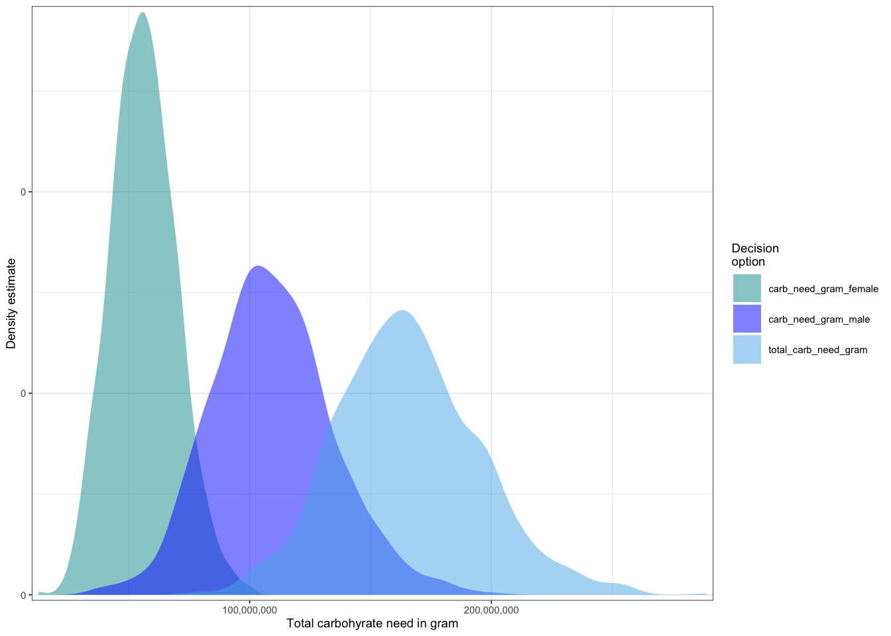

Nutritional Self-reliance vs. Guided Personalized Nutrition to improve nutritional outcome of football players
Two intervention choices were chosen to improve nutrition among Myanmar football players. The first choice was to improve the athlete’s nutrition knowledge by intensive nutrition training, and the second was to hire a nutrition team to oversee the athletes’ food intake.
Figure: Impact Pathway Model
Part 1: Calorie needs
Total calorie needs vs. current calorie intake
Calorie requirement of all athletes was calculated using Mifflin-St Jeor equation, adjusting for extra calorie for underweight athletes and lower calorie needs for overweight athletes. Current calorie intake of all athletes was also calculated using estimates.
Based on the calculations, there is an overlap between total calorie needs and current calorie intake. Thus, we can assume their current calorie intake meets the requirement. However, we cannot be certain their macronutrients intake will also meet the requirement.
The above plots also show both male and female athletes meet their calorie requirement.
Target carbohydrate, protein and fat distributions
Carbohydrate, protein and fat requirements in gram are calculated based on total calorie needs. Total carbohydrate, protein and fat needs for all athletes, as well as for male and female athletes separately are shown in the table and the plots below.
plot_distributions(mcSimulation_object =Calorie_mc_simulation, vars =c("protein_need_gram_male", "protein_need_gram_female","total_protein_need_gram"), method ='smooth_simple_overlay', x_axis_name ='Total protein need in gram', base_size =7)
Code
plot_distributions(mcSimulation_object =Calorie_mc_simulation, vars =c("carb_need_gram_male", "carb_need_gram_female","total_carb_need_gram"), method ='smooth_simple_overlay', x_axis_name ='Total carbohyrate need in gram', base_size =7)

Code
plot_distributions(mcSimulation_object =Calorie_mc_simulation, vars =c("fat_need_gram_male", "fat_need_gram_female","total_fat_need_gram"), method ='smooth_simple_overlay', x_axis_name ='Total fat need in gram', base_size =7)
Part 2: Macronutrient distributions
Current macronutrients intake vs. macronutrients requirement
The macronutrient distribution of current food intake of football players is calculated using estimated food recalls. Values are then compared to the macronutirent needs calculated in part 1 of the model.
The plot estimates current protein intake of athletes is a little higher than their protein requirement. But, we can assume their protein intake is okay since the minimum target protein (g/day) is used as the lower bound for estimation. Hence, their requirement can be higher than current estimates if we set their average needs as lower bound, which will be closer to their actual daily need.
Current fat intake is significantly higher than the fat requirement, and it needs to be reduced.
Hence, we can conclude, based on simulation results, that the athletes’ calorie and protein intake meet the requirement, whereas fat intake exceeds the requirement, and carbohydrate intake is lower than the requirement.
Calculate required servings of food based on the target needs
Next, we calculate how many servings of each food group is needed to meet the protein, carbohydrate and fat requirements. The table below shows the estimated servings required for each food group for all athletes for four simulation years.
Total protein provided by food is a bit higher than the protein needs, but we can assume this is okay since we set the minimum protein target as the lower bound when their actual requirement may be closer to the avearge protein target.
Part 3: Impact of learning outcome on nutrition intake
Athletes need to consume all the food provided to meet their nutrition goal by 100 percent. Our aim is for the athletes to meet at least 90% of their targeted nutrition goal. Hence, we simulate the probability of athletes consuming at least 90 percent of the nutrients provided for intervention one and two.
In intervention one, athletes are expected to calculate their daily requirements and recommended daily servings. Intensive nutrition training will be given, and a nutrition personnel will be available for consultation after the training ends. Standard measurement tools such as ladle, cup, etc. will be provided and educational posters such as food exchange list will be posted in the dining hall.
In intervention two, the nutrition team will calculate daily requirements of athletes and give dietary orders to the kitchen staff. Special dietary orders can be made for athletes at risk of malnutrition. Kitchen staff will prepare the orders accordingly and serve the athletes.
In both intervention, tray checking for leftover will be done by a nutrition personnel or kitchen staff to estimate daily intake of the whole team.
Simulation of learning outcome
Percent probability of good learning outcome for intervention one was predicted based on athletes’ prior knowledge on nutrition, their interest, motivation and persistence in learning. The same variables were used for intervention two except the persistance in learning since athletes are not expected to do the calculations by themselves.
Simulation of maintaining good nutrition
Based on the percent learning outcome, the percent probability of athletes continue following good nutrition habits was simulated with additional variables such as the chance of having good nutritionists or kitchen staff, the chance of food safety and food quality.
Percent probability of meeting nutrition target
Considering their learning outcome and probability of maintaining good nutrition, their actual food intake was calculated. Their water intake was also estimated, and based on these estimates, we simulated the percent probability of the athletes meeting the nutrition goals.
The output table below shows at least 90% of nutrition target was met in both intervention. Hence, based on the simulation results, both intervention one and two are equally effective to achieve the desired nutrition outcome.
Since both interventions are equally effective, the percent probability of good sports performance and mental well-being are also equal.
Warning: There are no variables with a positive EVPI. You probably do not need
a plot for that.
Part 4: Chance of Winning
Using the probability estimates of nutrition and sports outcome, we simulated the chance of winning for the MFF team. This is not to compare between intervention one and two, since it is already clear in part 3 that both are equally effective interventions. This part of the model aims to predict whether nutrition intervention can impact the winning chance significantly.
The team’s chance of winning was predicted based on their physical strength (nutrition and sports outcome), their readiness for game (energy, motivation, confidence), probability of playing in the home field, having good key and backup players, and advantage in strategy. All predictor variables except nutrition and sports outcome are left to random chance by setting lower bound at 10% and upper bound at 90%. The nutrition and sports outcome at baseline were set at 30% for lower bound and 50% for upper bound- the team’s nutrition and sports performance are comparable or lower than their nutrition needs or their opponents.
We used the output from part 3 of the model to simulate the increased chance of winning for the team after the intervention, and compared it with the chance of winning at baseline.
The above plot shows improved chance of winning after intervention than at baseline. This is because when all the other predictor variables remain constant, the model variations only depend on the nutrition and sports outcome. After intervention, the two outcomes are measured by their percent meeting the targets. Hence, the probability for nutrition increased to around 90% and sports outcome to about 80%.
However, we need to consider if we can use the same values when comparison is made with the opposing team. It is highly likely that athletes from opposing team take care of their nutrition and sports performance. Thus, using the same estimates of about 80-90% means that the nutrition and sports performance of MFF athletes are way better than the opposition. This also implies that the athletes from opposing team are at risk of malnutrition— very unlikely.
Thus, we use realistic estimates of 50% at lower bound and 70% at upper bound (still quite generous estimates)— the nutrition and sports performace of MFF athletes are comparable or a bit better than the opposing team. The result is shown in the plot below.
Code
plot_distributions(mcSimulation_object =Chance_mc_simulation, vars =c("chance_winning_opponent","chance_winning_current"), method ='smooth_simple_overlay', x_axis_name ='probability', base_size =7)
There is almost complete overlap between the two curves, showing when other predictors remain constant, improved nutrition is not enough to enhance the chance of winning. So, nutrition alone is not the answer. Improvement should be achieved in all areas including nutrition.
The comparison between the net chance of winning within team (at baseline and after intervention) and the net chance of winning between teams (MFF and opposing team) show significant gap with the latter at the lower end.
Cost and benefit analyses for intervention one and intervention two were done, and post-hoc tests such as EVPI and PLS analyses were carried out. The benefits include benefit for nutrition, training performance and emotional well-being. Nutrition benefit was estimated as the amount the decision makers are willing to invest to acheive the nutrition goals. Benefit for training performance was estimated in terms of increased sponsorship and merchandise sales. Mental health benefits was half the amount spent by the MFF for the activities to boost athletes’ morale.
Comparison between net present values
Code
plot_distributions(mcSimulation_object =Cost_benefit_mc_simulation, vars =c("NPV_intervention_one", "NPV_intervention_two"), x_axis_name ='Myanmar kyat', method ='boxplot')
The above plot shows net present values (NPV) for four simulation years for both intervention. As seen in the plot, the NPV for intervention one is slightly higher than the NPV for intervention two.
Higher positive cashflow is expected for intervention one. This can be due to lower investment cost for intervention one. So, we will check the investment costs next.
Both intervention one and intervention two are equally effective in reaching nutrition goals and improving sports performance. Based on the cost and benefit analysis, the intervention one can provide higher benefit due to its lower cost of implementation, when everything else is equal.
Source Code
---title: "MFF_final_report"author: "SM"date: "`r format(Sys.time(), '%B %d, %Y')`"format: html: toc: true toc_float: true toc-title: "Contents" toc-depth: 5 toc-location: left number_sections: true fig_caption: true code-tools: true code-fold: true code-summary: 'Show code' code-link: true code_highlight: tango code_download: true theme: sandstone highlight: tango smooth-scroll: true---```{r setup, include=FALSE, message=FALSE, warning=FALSE}knitr::opts_chunk$set(echo =TRUE, message =FALSE, warning =FALSE, tidy =TRUE)library(decisionSupport)library(gridExtra)```# Nutritional Self-reliance vs. Guided Personalized Nutrition to improve nutritional outcome of football players<br>Two intervention choices were chosen to improve nutrition among Myanmar football players. The first choice was to improve the athlete's nutrition knowledge by intensive nutrition training, and the second was to hire a nutrition team to oversee the athletes' food intake. <br><br>## Part 1: Calorie needs### Total calorie needs vs. current calorie intakeCalorie requirement of all athletes was calculated using Mifflin-St Jeor equation, adjusting for extra calorie for underweight athletes and lower calorie needs for overweight athletes. Current calorie intake of all athletes was also calculated using estimates. ```{r echo=FALSE, message=FALSE, warning=FALSE}set.seed(21)make_variables<-function(est,n=1){ x<-random(rho=est, n=n)for(i incolnames(x)) assign(i, as.numeric(x[1,i]),envir=.GlobalEnv)}make_variables(estimate_read_csv(paste("1_Calorie.csv")))Calorie_function <-function(x, varnames){### For First Year# Calculate BMR for men using the Mifflin-St Jeor equation bmr_male <-vv(((10*weight_male) + (6.25*height_male) - (5*age_male) +5), var_CV, n =1)# Calculate BMR for women using the Mifflin-St Jeor equation bmr_female <-vv(((10*weight_female) + (6.25*height_female) - (5*age_female) -161), var_CV, n =1)################################################################################## Normal training days# Calculate daily calorie target for men to maintain current weight daily_kcal_tar_nor_male <-vv(bmr_male * paf_normal, var_CV, n =1)# Calculate daily calorie target for women to maintain current weight daily_kcal_tar_nor_female <-vv(bmr_female * paf_normal, var_CV, n =1)################################################################################ ## Intensive training days# Calculate daily calorie target for men to maintain current weight daily_kcal_tar_int_male <-vv(bmr_male * paf_intensive, var_CV, n =1)# Calculate daily calorie target for women to maintain current weight daily_kcal_tar_int_female <-vv(bmr_female * paf_intensive, var_CV, n =1)################################################################################ ## Extra calorie needs for underweight athletes# Calculate BMI for male athletes bmi_male <-vv(weight_male/(height_male*0.01)^2, var_CV, n =1)# Number of underweight male athletes underweight_male <-vv(per_underweight_male * number_male, var_CV, n =1)# Extract weight range of underweight male athletes underweight_bmi_male <-vv(ifelse(bmi_male < bmi_low_cutoff, bmi_male, 0), var_CV, n =1)## here we estimate weights for all possible low bmi for all heights wt_under_male <-vv(underweight_bmi_male * (height_male *0.01)^2, var_CV, n =1)# Range of extra weight gain needed (kg) for male athletes wt_healthy_male <- bmi_healthy_cutoff * (height_male *0.01)^2 extra_wt_male <-vv(wt_healthy_male - wt_under_male, var_CV, n =1)# Range of weeks needed to meet target weights wt_gain_week_male <-vv(extra_wt_male/weekly_weight_gain, var_CV, n =1)# Range of extra calorie needed for male athletes for total target weeks extra_kcal_male <-vv(weekly_extra_kcal * wt_gain_week_male, var_CV, n =1)###################### Calculate BMI for female athletes bmi_female <-vv(weight_female/(height_female*0.01)^2, var_CV, n =1)# Number of underweight female athletes underweight_female <-vv(per_underweight_female * number_female, var_CV, n =1)# Extract weight range of underweight female athletes underweight_bmi_female <-vv(ifelse(bmi_female < bmi_low_cutoff, bmi_female, 0), var_CV, n =1)## here we estimate weights for all possible low bmi for all heights wt_under_female <-vv(underweight_bmi_female * (height_female *0.01)^2, var_CV, n =1)# Range of extra weight gain needed (kg) for female athletes wt_healthy_female <- bmi_healthy_cutoff * (height_female *0.01)^2 extra_wt_female <-vv(wt_healthy_female - wt_under_female, var_CV, n =1)# Range of weeks needed to meet target weights wt_gain_week_female <-vv(extra_wt_female/weekly_weight_gain, var_CV, n =1)# Range of extra calorie needed for female athletes for total target weeks extra_kcal_female <-vv(weekly_extra_kcal * wt_gain_week_female, var_CV, n =1)################################################################################ ## Deduct calories for overweight athletes# watch out for training intensity- kcal deduction will be less if they increase training# Calculate fat mass of male athletes (weight in kg * (% body fat)/100) fat_mass_male <-vv(weight_male * (fat_perc_male/100), var_CV, n =1)# Calculate lean body mass of male athletes (total body weight - fat mass) lean_mass_male <-vv(weight_male - fat_mass_male, var_CV, n =1)# Calculate target weight for male athletes# Since input table allows range, I just use one calculation to generate range-no need for step-cal target_wt_male <-vv(lean_mass_male/(1-(target_fat_perc_male/100)), var_CV, n =1)# Extract number of male athletes with percent body fat above threshold range number_overweight_male <-vv(per_overweight_male * number_male, var_CV, n =1)# Extract range of male percent body fat above threshold range fat_above_threshold_male <-vv(ifelse(fat_perc_male > target_fat_perc_male, fat_perc_male, 0), var_CV, n =1)# Extract weight range of male athletes with percent body fat above threshold range wt_over_male <-vv(lean_mass_male/(1-(fat_above_threshold_male/100)), var_CV, n =1)# Range of weight loss needed (kg) for male athletes with percent body fat above threshold range wt_deduct_male <-vv(wt_over_male - target_wt_male, var_CV, n =1)# Range of weeks needed to meet target weights wt_loss_week_male <-vv(wt_deduct_male/weekly_weight_loss, var_CV, n =1)# Range of calorie deduction needed for male athletes for total target weeks kcal_deduct_male <-vv(weekly_extra_kcal * wt_loss_week_male, var_CV, n =1)######################## Calculate fat mass of female athletes (weight in kg * (% body fat)/100) fat_mass_female <-vv(weight_female * (fat_perc_female/100), var_CV, n =1)# Calculate lean body mass of female athletes (total body weight - fat mass) lean_mass_female <-vv(weight_female - fat_mass_female, var_CV, n =1)# Calculate target weight for female athletes target_wt_female <-vv(lean_mass_female/(1-(target_fat_perc_female/100)), var_CV, n =1)# Extract number of female athletes with percent body fat above threshold range number_overweight_female <-vv(per_overweight_female * number_female, var_CV, n =1)# Extract range of female percent body fat above threshold range fat_above_threshold_female <-vv(ifelse(fat_perc_female > target_fat_perc_female, fat_perc_female, 0), var_CV, n =1)# Extract weight range of female athletes with percent body fat above threshold range wt_over_female <-vv(lean_mass_female/(1- (fat_above_threshold_female/100)), var_CV, n =1)# Range of weight loss needed (kg) for female athletes with percent body fat above threshold range wt_deduct_female <-vv(wt_over_female - target_wt_female, var_CV, n =1)# Range of weeks needed to meet target weights wt_loss_week_female <-vv(wt_deduct_female/weekly_weight_loss, var_CV, n =1)# Range of calorie deduction needed for female athletes for total target weeks kcal_deduct_female <-vv(weekly_extra_kcal * wt_loss_week_female, var_CV, n =1)################################################################################ ### Total yearly calorie needs ## Total first-year calorie needs for athletes within healthy weight range# Calculate number of male athletes within healthy weight range number_healthy_male <- number_male - (underweight_male + number_overweight_male)# Calculate total calorie needs for healthy weight range athletes for the first year bmr_healthy_male <-vv(((10*target_wt_male) + (6.25*height_male) - (5*age_male) +5), var_CV, n =1) daily_kcal_tar_nor_healthy_male <-vv(bmr_healthy_male * paf_normal, var_CV, n =1) daily_kcal_tar_int_healthy_male <-vv(bmr_healthy_male * paf_intensive, var_CV, n =1) first_year_kcal_healthy_male <-vv((daily_kcal_tar_nor_healthy_male*normal_training) + (daily_kcal_tar_int_healthy_male*intensive_training), var_CV, n =1) total_first_year_kcal_healthy_male <-vv(first_year_kcal_healthy_male*number_healthy_male, var_CV, n =1)############### Calculate number of female athletes within healthy weight range number_healthy_female <- number_female - (underweight_female + number_overweight_female)# Calculate total calorie needs for healthy weight range athletes for the first year bmr_healthy_female <-vv(((10*target_wt_female) + (6.25*height_female) - (5*age_female) -161), var_CV, n =1) daily_kcal_tar_nor_healthy_female <-vv(bmr_healthy_female * paf_normal, var_CV, n =1) daily_kcal_tar_int_healthy_female <-vv(bmr_healthy_female * paf_intensive, var_CV, n =1) first_year_kcal_healthy_female <-vv((daily_kcal_tar_nor_healthy_female*normal_training) + (daily_kcal_tar_int_healthy_female*intensive_training), var_CV, n =1) total_first_year_kcal_healthy_female <-vv(first_year_kcal_healthy_female*number_healthy_female, var_CV, n =1)####################################################### Total first-year calorie needs for male athletes below healthy BMI range# Change weight gain weeks for male athletes into days wt_gain_week_male_in_days <- wt_gain_week_male *7## Intensive training period (training before games) comes after normal period# Calculate total days where underweight athletes will do normal or intensive training during weight gain period wt_gain_int_training_days_male <-abs(wt_gain_week_male_in_days - normal_training) wt_gain_nor_training_days_male <-ifelse(normal_training >= wt_gain_week_male_in_days, wt_gain_week_male_in_days, (wt_gain_week_male_in_days - wt_gain_int_training_days_male))# Base calorie needs for an underweight male athlete during weight gain period base_kcal_need_during_wt_gain_male <-ifelse(wt_gain_week_male_in_days <= normal_training, (daily_kcal_tar_nor_male*wt_gain_week_male_in_days), ((daily_kcal_tar_nor_male*wt_gain_nor_training_days_male)+ daily_kcal_tar_int_male*wt_gain_int_training_days_male))# Total calorie needs for an underweight male athlete during weight gain period total_kcal_wt_gain_male <- base_kcal_need_during_wt_gain_male + extra_kcal_male##################### Total calorie needs for an underweight male (now normal weight) after weight gain period total_training_days <- normal_training + intensive_training training_days_after_wt_gain_male <- total_training_days - wt_gain_week_male_in_days nor_training_days_after_wt_gain_male <-ifelse(training_days_after_wt_gain_male > intensive_training, (training_days_after_wt_gain_male - intensive_training), 0) int_training_days_after_wt_gain_male <-ifelse(training_days_after_wt_gain_male > intensive_training, (training_days_after_wt_gain_male - nor_training_days_after_wt_gain_male), training_days_after_wt_gain_male) first_year_kcal_after_wt_gain_male <- ((daily_kcal_tar_nor_healthy_male* nor_training_days_after_wt_gain_male) + (daily_kcal_tar_int_healthy_male* int_training_days_after_wt_gain_male))# Total first year calorie needs for all underweight male athletes during and after weight gain total_first_year_kcal_wt_gain_male <-vv((total_kcal_wt_gain_male + first_year_kcal_after_wt_gain_male)* underweight_male, var_CV, n =1)########################################################### Total first-year calorie needs for female athletes below healthy BMI range# Change weight gain weeks for female athletes into days wt_gain_week_female_in_days <- wt_gain_week_female *7## Intensive training period (training before games) comes after normal period# Calculate total days where underweight athletes will do normal or intensive training during weight gain period wt_gain_int_training_days_female <-abs(wt_gain_week_female_in_days - normal_training) wt_gain_nor_training_days_female <-ifelse(normal_training >= wt_gain_week_female_in_days, wt_gain_week_female_in_days, (wt_gain_week_female_in_days - wt_gain_int_training_days_female))# Base calorie needs for an underweight female athlete during weight gain period base_kcal_need_during_wt_gain_female <-ifelse(wt_gain_week_female_in_days <= normal_training, (daily_kcal_tar_nor_female*wt_gain_week_female_in_days), ((daily_kcal_tar_nor_female*wt_gain_nor_training_days_female)+ daily_kcal_tar_int_female*wt_gain_int_training_days_female))# Total calorie needs for an underweight male athlete during weight gain period total_kcal_wt_gain_female <- base_kcal_need_during_wt_gain_female + extra_kcal_female##################### Total calorie needs for an underweight female (now normal weight) after weight gain period total_training_days <- normal_training + intensive_training training_days_after_wt_gain_female <- total_training_days - wt_gain_week_female_in_days nor_training_days_after_wt_gain_female <-ifelse(training_days_after_wt_gain_female > intensive_training, (training_days_after_wt_gain_female - intensive_training), 0) int_training_days_after_wt_gain_female <-ifelse(training_days_after_wt_gain_female > intensive_training, (training_days_after_wt_gain_female - nor_training_days_after_wt_gain_female), training_days_after_wt_gain_female) first_year_kcal_after_wt_gain_female <- ((daily_kcal_tar_nor_healthy_female* nor_training_days_after_wt_gain_female) + (daily_kcal_tar_int_healthy_female* int_training_days_after_wt_gain_female))# Total first year calorie needs for all underweight female athletes during and after weight gain total_first_year_kcal_wt_gain_female <-vv((total_kcal_wt_gain_female + first_year_kcal_after_wt_gain_female)* underweight_female, var_CV, n =1)########################################################## Total calorie needs for male athletes above body fat % threshold for the first year# This is calculated assuming their training regimen remains unchanged- any additional# workout done by the athletes to reduce weight should be reported and considered# Change weight loss weeks for male athletes into days wt_loss_week_male_in_days <- wt_loss_week_male *7# Calculate total days where overweight athletes will do normal or intensive training during weight loss period wt_loss_int_training_days_male <-abs(wt_loss_week_male_in_days - normal_training) wt_loss_nor_training_days_male <-ifelse(wt_loss_week_male_in_days <= normal_training, wt_loss_week_male_in_days, (wt_loss_week_male_in_days - wt_loss_int_training_days_male))# Base calorie needs for an overweight male athlete during weight loss period base_kcal_need_during_wt_loss_male <-ifelse(wt_loss_week_male_in_days <= normal_training, (daily_kcal_tar_nor_male * wt_loss_week_male_in_days), ((daily_kcal_tar_nor_male* wt_loss_nor_training_days_male) + (daily_kcal_tar_int_male * wt_loss_int_training_days_male)))# Total calorie needs for an overweight male athlete during weight loss period total_kcal_wt_loss_male <- base_kcal_need_during_wt_loss_male - kcal_deduct_male##################### Total calorie needs for an overweight male (now normal weight) after weight loss period total_training_days <- normal_training + intensive_training training_days_after_wt_loss_male <- total_training_days - wt_loss_week_male_in_days nor_training_days_after_wt_loss_male <-ifelse(training_days_after_wt_loss_male > intensive_training, (training_days_after_wt_loss_male - intensive_training), 0) int_training_days_after_wt_loss_male <-ifelse(training_days_after_wt_loss_male > intensive_training, (training_days_after_wt_loss_male - nor_training_days_after_wt_loss_male), training_days_after_wt_loss_male) first_year_kcal_after_wt_loss_male <- ((daily_kcal_tar_nor_healthy_male* nor_training_days_after_wt_loss_male) + (daily_kcal_tar_int_healthy_male* int_training_days_after_wt_loss_male))# Total first year calorie needs for all overweight male athletes during and after weight loss total_first_year_kcal_wt_loss_male <-vv((total_kcal_wt_loss_male + first_year_kcal_after_wt_loss_male)* number_overweight_male, var_CV, n =1)############################################## Total calorie needs for female athletes above body fat % threshold for the first year# This is calculated assuming their training regimen remains unchanged- any additional# workout done by the athletes to reduce weight should be reported and considered# Change weight loss weeks for female athletes into days wt_loss_week_female_in_days <- wt_loss_week_female *7# Calculate total days where overweight athletes will do normal or intensive training during weight loss period wt_loss_int_training_days_female <-abs(wt_loss_week_female_in_days - normal_training) wt_loss_nor_training_days_female <-ifelse(wt_loss_week_female_in_days <= normal_training, wt_loss_week_female_in_days, (wt_loss_week_female_in_days - wt_loss_int_training_days_female))# Base calorie needs for an overweight female athlete during weight loss period base_kcal_need_during_wt_loss_female <-ifelse(wt_loss_week_female_in_days <= normal_training, (daily_kcal_tar_nor_female * wt_loss_week_female_in_days), ((daily_kcal_tar_nor_female* wt_loss_nor_training_days_female) + (daily_kcal_tar_int_female * wt_loss_int_training_days_female)))# Total calorie needs for an overweight female athlete during weight loss period total_kcal_wt_loss_female <- base_kcal_need_during_wt_loss_female - kcal_deduct_female##################### Total calorie needs for an overweight female (now normal weight) after weight loss period total_training_days <- normal_training + intensive_training training_days_after_wt_loss_female <- total_training_days - wt_loss_week_female_in_days nor_training_days_after_wt_loss_female <-ifelse(training_days_after_wt_loss_female > intensive_training, (training_days_after_wt_loss_female - intensive_training), 0) int_training_days_after_wt_loss_female <-ifelse(training_days_after_wt_loss_female > intensive_training, (training_days_after_wt_loss_female - nor_training_days_after_wt_loss_female), training_days_after_wt_loss_female) first_year_kcal_after_wt_loss_female <- ((daily_kcal_tar_nor_healthy_female* nor_training_days_after_wt_loss_female) + (daily_kcal_tar_int_healthy_female* int_training_days_after_wt_loss_female))# Total first year calorie needs for all overweight female athletes during and after weight loss total_first_year_kcal_wt_loss_female <-vv((total_kcal_wt_loss_female + first_year_kcal_after_wt_loss_female)* number_overweight_female, var_CV, n =1)############################################### Calculate total yearly calorie needs for male athletes for first year total_first_year_kcal_need_male <-vv(total_first_year_kcal_healthy_male + total_first_year_kcal_wt_gain_male + total_first_year_kcal_wt_loss_male, var_CV, n =1)# Calculate total yearly calorie needs for female athletes for first year total_first_year_kcal_need_female <-vv(total_first_year_kcal_healthy_female + total_first_year_kcal_wt_gain_female + total_first_year_kcal_wt_loss_female, var_CV, n =1)# Calculate overall yearly calorie needs for first year overall_first_year_kcal_need <-vv(total_first_year_kcal_need_male + total_first_year_kcal_need_female, var_CV, n =1)################################################################################ ## For following years (except first year)# I calculate again for following years because the assumption is after first year# all athletes will be within normal weight range- so not the same weight as in # the input table# Calculate total yearly calorie needs for male athlete (now all within healthy weight range) bmr_healthy_male_yearly <-vv(((10*target_wt_male) + (6.25*height_male) - (5*age_male) +5), var_CV, n_year) daily_kcal_tar_nor_healthy_male_yearly <-vv(bmr_healthy_male_yearly * paf_normal, var_CV, n_year) daily_kcal_tar_int_healthy_male_yearly <-vv(bmr_healthy_male_yearly * paf_intensive, var_CV, n_year) total_kcal_need_male_yearly <-vv(((daily_kcal_tar_nor_healthy_male_yearly * normal_training) + (daily_kcal_tar_int_healthy_male_yearly * intensive_training))*number_male, var_CV, n_year) total_kcal_need_male_yearly[1] <- total_first_year_kcal_need_male############### Calculate total yearly calorie needs for female athlete (now all within healthy weight range) bmr_healthy_female_yearly <-vv(((10*target_wt_female) + (6.25*height_female) - (5*age_female) -161), var_CV, n_year) daily_kcal_tar_nor_healthy_female_yearly <-vv(bmr_healthy_female_yearly * paf_normal, var_CV, n_year) daily_kcal_tar_int_healthy_female_yearly <-vv(bmr_healthy_female_yearly * paf_intensive, var_CV, n_year) total_kcal_need_female_yearly <-vv(((daily_kcal_tar_nor_healthy_female_yearly * normal_training) + (daily_kcal_tar_int_healthy_female_yearly * intensive_training))*number_female, var_CV, n_year) total_kcal_need_female_yearly[1] <- total_first_year_kcal_need_female################################################################################## Calculate extra calorie provided during intervention (to calculate cost) # Calculate current yearly calorie intake for male athletes current_kcal_intake_yearly_male <-vv((daily_kcal_male * total_training_days)* number_male, var_CV, n_year)# Calculate extra yearly calorie need for male athletes extra_yearly_kcal_need_male <-vv(total_kcal_need_male_yearly - current_kcal_intake_yearly_male, var_CV, n_year)# Calculate current yearly calorie intake for female athletes current_kcal_intake_yearly_female <-vv((daily_kcal_female * total_training_days)* number_female, var_CV, n_year)# Calculate extra yearly calorie need for female athletes extra_yearly_kcal_need_female <-vv(total_kcal_need_female_yearly - current_kcal_intake_yearly_female, var_CV, n_year)# Calculate overall yearly extra calorie need overall_yearly_extra_kcal_need <-vv(extra_yearly_kcal_need_male + extra_yearly_kcal_need_female, var_CV, n_year)################################################################################ # The calorie simulation results show the athletes' kcal intake is not a problem.# So, I will check if the problem lies in quality of the calorie- the distribution of macronutrient # I will calculate current macronutrient intake in model 2 coz need to calculate it from food type and portion# I calculate macronutrient targets based on calorie target (kcal need)#### Protein need # Calculate protein need for male athletes protein_need_kcal_male <-vv(protein_need_percent * total_kcal_need_male_yearly, var_CV, n_year) protein_need_gram_male <-vv(protein_need_kcal_male/4, var_CV, n_year)########################## Calculate protein need for female athletes protein_need_kcal_female <-vv(protein_need_percent * total_kcal_need_female_yearly, var_CV, n_year) protein_need_gram_female <-vv(protein_need_kcal_female/4, var_CV, n_year) total_protein_need_gram <- protein_need_gram_female + protein_need_gram_male################################################################################ ### Carbohydrate# Calculate carbohydrate need for male athletes carb_need_kcal_male <-vv(carb_need_percent*total_kcal_need_male_yearly, var_CV, n_year) carb_need_gram_male <-vv(carb_need_kcal_male/4, var_CV, n_year)########################## Calculate carbohydrate need for female athletes carb_need_kcal_female <-vv(carb_need_percent*total_kcal_need_female_yearly, var_CV, n_year) carb_need_gram_female <-vv(carb_need_kcal_female/4, var_CV, n_year) total_carb_need_gram <- carb_need_gram_male + carb_need_gram_female################################################################################ ### Fat fat_need_kcal_male <-vv(total_kcal_need_male_yearly - (protein_need_kcal_male + carb_need_kcal_male), var_CV, n_year) fat_need_gram_male <-vv(fat_need_kcal_male/9, var_CV, n_year) fat_need_kcal_female <-vv(total_kcal_need_female_yearly - (protein_need_kcal_female + carb_need_kcal_female), var_CV, n_year) fat_need_gram_female <-vv(fat_need_kcal_female/9, var_CV, n_year) total_fat_need_gram <- fat_need_gram_male + fat_need_gram_female# Check model using Fat fat_model_check_one <- fat_need_kcal_female + fat_need_kcal_male fat_model_check_two <-vv(fat_tar_perc*(total_kcal_need_female_yearly+ total_kcal_need_male_yearly), var_CV, n_year)# Fix the years total_kcal_need_yearly_all_athletes <-vv(total_kcal_need_male_yearly + total_kcal_need_female_yearly, var_CV, n_year) total_kcal_current_yearly_all_athletes <-vv(current_kcal_intake_yearly_male + current_kcal_intake_yearly_female, var_CV, n_year)################################################################################ return(list(total_kcal_need_male =sum(total_kcal_need_male_yearly),total_kcal_need_female =sum(total_kcal_need_female_yearly),current_kcal_intake_male =sum(current_kcal_intake_yearly_male),current_kcal_intake_female =sum(current_kcal_intake_yearly_female),total_kcal_need_yearly_all_athletes =list(total_kcal_need_yearly_all_athletes),total_kcal_need_of_all_athletes =sum(total_kcal_need_yearly_all_athletes),total_kcal_current_yearly_all_athletes =list(total_kcal_current_yearly_all_athletes),total_current_kcal_intake_of_all_athletes =sum(total_kcal_current_yearly_all_athletes),protein_need_gram_male =sum(protein_need_gram_male),protein_need_gram_female =sum(protein_need_gram_female),total_protein_need_gram =sum(total_protein_need_gram),total_protein_need_gram =list(total_protein_need_gram),carb_need_gram_male =sum(carb_need_gram_male),carb_need_gram_female =sum(carb_need_gram_female),total_carb_need_gram =sum(total_carb_need_gram),total_carb_need_gram =list(total_carb_need_gram),fat_need_gram_male =sum(fat_need_gram_male),fat_need_gram_female =sum(fat_need_gram_female),total_fat_need_gram =sum(total_fat_need_gram),total_fat_need_gram =list(total_fat_need_gram),fat_model_check_one =sum(fat_model_check_one),fat_model_check_two =sum(fat_model_check_two),target_wt_female =sum(target_wt_female),target_wt_male =sum(target_wt_male)))}# Run the Monte Carlo Simulation Calorie_mc_simulation <-mcSimulation(estimate =estimate_read_csv("1_Calorie.csv"),model_function = Calorie_function,numberOfModelRuns =1000,functionSyntax ="plainNames")``````{r m11}plot_distributions(mcSimulation_object = Calorie_mc_simulation,vars =c("total_kcal_need_of_all_athletes", "total_current_kcal_intake_of_all_athletes"),method ='smooth_simple_overlay',x_axis_name ='Calorie (kcal)',base_size =7)```Based on the calculations, there is an overlap between total calorie needs and current calorie intake. Thus, we can assume their current calorie intake meets the requirement. However, we cannot be certain their macronutrients intake will also meet the requirement.<br>```{r m12}plot1 <-plot_distributions(mcSimulation_object = Calorie_mc_simulation,vars =c("current_kcal_intake_male", "total_kcal_need_male"),method ='smooth_simple_overlay',x_axis_name ='Calorie (kcal)',base_size =7)plot2 <-plot_distributions(mcSimulation_object = Calorie_mc_simulation,vars =c("current_kcal_intake_female", "total_kcal_need_female"),method ='smooth_simple_overlay',x_axis_name ='Calorie (kcal)',base_size =7)grid.arrange(plot1, plot2, ncol =2)```The above plots also show both male and female athletes meet their calorie requirement. <br>### Target carbohydrate, protein and fat distributionsCarbohydrate, protein and fat requirements in gram are calculated based on total calorie needs. Total carbohydrate, protein and fat needs for all athletes, as well as for male and female athletes separately are shown in the table and the plots below.``` {r savec}df<-read.csv("macro_needs.csv")knitr::kable(df)``````{r m13}plot_distributions(mcSimulation_object = Calorie_mc_simulation,vars =c("protein_need_gram_male", "protein_need_gram_female","total_protein_need_gram"),method ='smooth_simple_overlay',x_axis_name ='Total protein need in gram',base_size =7)plot_distributions(mcSimulation_object = Calorie_mc_simulation,vars =c("carb_need_gram_male", "carb_need_gram_female","total_carb_need_gram"),method ='smooth_simple_overlay',x_axis_name ='Total carbohyrate need in gram',base_size =7)plot_distributions(mcSimulation_object = Calorie_mc_simulation,vars =c("fat_need_gram_male", "fat_need_gram_female","total_fat_need_gram"),method ='smooth_simple_overlay',x_axis_name ='Total fat need in gram',base_size =7)```<br>## Part 2: Macronutrient distributions### Current macronutrients intake vs. macronutrients requirementThe macronutrient distribution of current food intake of football players is calculated using estimated food recalls. Values are then compared to the macronutirent needs calculated in part 1 of the model. ```{r m2, echo=FALSE, message=FALSE, warning=FALSE}set.seed(56)make_variables<-function(est,n=1){ x<-random(rho=est, n=n)for(i incolnames(x)) assign(i, as.numeric(x[1,i]),envir=.GlobalEnv)}make_variables(estimate_read_csv(paste("2_Food_type.csv"))) Food_function <-function(x, varnames){## Change 100g value to value per serve # Chicken chicken_raw_per_serve_kcal <- chicken_raw_100g_kcal * chicken_gram_per_serve/100 chicken_raw_per_serve_protein <- chicken_raw_100g_protein * chicken_gram_per_serve/100 chicken_raw_per_serve_CHO <- chicken_raw_100g_CHO * chicken_gram_per_serve/100 chicken_raw_per_serve_fat <- chicken_raw_100g_fat * chicken_gram_per_serve/100 chicken_raw_per_serve_Ca <- chicken_raw_100g_Ca * chicken_gram_per_serve/100 chicken_raw_per_serve_Fe <- chicken_raw_100g_Fe * chicken_gram_per_serve/100# Pork pork_raw_per_serve_kcal <- pork_raw_100g_kcal * pork_gram_per_serve/100 pork_raw_per_serve_protein <- pork_raw_100g_protein * pork_gram_per_serve/100 pork_raw_per_serve_CHO <- pork_raw_100g_CHO * pork_gram_per_serve/100 pork_raw_per_serve_fat <- pork_raw_100g_fat * pork_gram_per_serve/100 pork_raw_per_serve_Ca <- pork_raw_100g_Ca * pork_gram_per_serve/100 pork_raw_per_serve_Fe <- pork_raw_100g_Fe * pork_gram_per_serve/100# Beef beef_raw_per_serve_kcal <- beef_raw_100g_kcal * beef_gram_per_serve/100 beef_raw_per_serve_protein <- beef_raw_100g_protein * beef_gram_per_serve/100 beef_raw_per_serve_CHO <- beef_raw_100g_CHO * beef_gram_per_serve/100 beef_raw_per_serve_fat <- beef_raw_100g_fat * beef_gram_per_serve/100 beef_raw_per_serve_Ca <- beef_raw_100g_Ca * beef_gram_per_serve/100 beef_raw_per_serve_Fe <- beef_raw_100g_Fe * beef_gram_per_serve/100# Fish fish_raw_per_serve_kcal <- fish_raw_100g_kcal * fish_gram_per_serve/100 fish_raw_per_serve_protein <- fish_raw_100g_protein * fish_gram_per_serve/100 fish_raw_per_serve_CHO <- fish_raw_100g_CHO * fish_gram_per_serve/100 fish_raw_per_serve_fat <- fish_raw_100g_fat * fish_gram_per_serve/100 fish_raw_per_serve_Ca <- fish_raw_100g_Ca * fish_gram_per_serve/100 fish_raw_per_serve_Fe <- fish_raw_100g_Fe * fish_gram_per_serve/100# Prawn prawn_raw_per_serve_kcal <- prawn_raw_100g_kcal * prawn_gram_per_serve/100 prawn_raw_per_serve_protein <- prawn_raw_100g_protein * prawn_gram_per_serve/100 prawn_raw_per_serve_CHO <- prawn_raw_100g_CHO * prawn_gram_per_serve/100 prawn_raw_per_serve_fat <- prawn_raw_100g_fat * prawn_gram_per_serve/100 prawn_raw_per_serve_Ca <- prawn_raw_100g_Ca * prawn_gram_per_serve/100 prawn_raw_per_serve_Fe <- prawn_raw_100g_Fe * prawn_gram_per_serve/100# Vegetable/Mushroom vegetable_mushroom_raw_per_serve_kcal <- vegetable_mushroom_raw_100g_kcal * vegetable_mushroom_gram_per_serve/100 vegetable_mushroom_raw_per_serve_protein <- vegetable_mushroom_raw_100g_protein * vegetable_mushroom_gram_per_serve/100 vegetable_mushroom_raw_per_serve_CHO <- vegetable_mushroom_raw_100g_CHO * vegetable_mushroom_gram_per_serve/100 vegetable_mushroom_raw_per_serve_fat <- vegetable_mushroom_raw_100g_fat * vegetable_mushroom_gram_per_serve/100 vegetable_mushroom_raw_per_serve_Ca <- vegetable_mushroom_raw_100g_Ca * vegetable_mushroom_gram_per_serve/100 vegetable_mushroom_raw_per_serve_Fe <- vegetable_mushroom_raw_100g_Fe * vegetable_mushroom_gram_per_serve/100# Bean/Nut # (I use same serving size for bean as nut because beans was rarely on the menu- upset stomach risk?) bean_nut_raw_per_serve_kcal <- bean_nut_raw_100g_kcal * bean_nut_gram_per_serve/100 bean_nut_raw_per_serve_protein <- bean_nut_raw_100g_protein * bean_nut_gram_per_serve/100 bean_nut_raw_per_serve_CHO <- bean_nut_raw_100g_CHO * bean_nut_gram_per_serve/100 bean_nut_raw_per_serve_fat <- bean_nut_raw_100g_fat * bean_nut_gram_per_serve/100 bean_nut_raw_per_serve_Ca <- bean_nut_raw_100g_Ca * bean_nut_gram_per_serve/100 bean_nut_raw_per_serve_Fe <- bean_nut_raw_100g_Fe * bean_nut_gram_per_serve/100# Egg egg_whole_per_serve_kcal <- egg_whole_100g_kcal * egg_whole_gram_per_serve/100 egg_whole_per_serve_protein <- egg_whole_100g_protein * egg_whole_gram_per_serve/100 egg_whole_per_serve_CHO <- egg_whole_100g_CHO * egg_whole_gram_per_serve/100 egg_whole_per_serve_fat <- egg_whole_100g_fat * egg_whole_gram_per_serve/100 egg_whole_per_serve_Ca <- egg_whole_100g_Ca * egg_whole_gram_per_serve/100 egg_whole_per_serve_Fe <- egg_whole_100g_Fe * egg_whole_gram_per_serve/100# Dairy dairy_per_serve_kcal <- dairy_100g_kcal * dairy_ml_per_serve/100 dairy_per_serve_protein <- dairy_100g_protein * dairy_ml_per_serve/100 dairy_per_serve_CHO <- dairy_100g_CHO * dairy_ml_per_serve/100 dairy_per_serve_fat <- dairy_100g_fat * dairy_ml_per_serve/100 dairy_per_serve_Ca <- dairy_100g_Ca * dairy_ml_per_serve/100 dairy_per_serve_Fe <- dairy_100g_Fe * dairy_ml_per_serve/100# Fruit fruit_per_serve_kcal <- fruit_100g_kcal * fruit_gram_per_serve/100 fruit_per_serve_protein <- fruit_100g_protein * fruit_gram_per_serve/100 fruit_per_serve_CHO <- fruit_100g_CHO * fruit_gram_per_serve/100 fruit_per_serve_fat <- fruit_100g_fat * fruit_gram_per_serve/100 fruit_per_serve_Ca <- fruit_100g_Ca * fruit_gram_per_serve/100 fruit_per_serve_Fe <- fruit_100g_Fe * fruit_gram_per_serve/100# Rice/Noodle rice_noodle_cooked_per_serve_kcal <- rice_noodle_cooked_100g_kcal * rice_noodle_gram_per_serve/100 rice_noodle_cooked_per_serve_protein <- rice_noodle_cooked_100g_protein * rice_noodle_gram_per_serve/100 rice_noodle_cooked_per_serve_CHO <- rice_noodle_cooked_100g_CHO * rice_noodle_gram_per_serve/100 rice_noodle_cooked_per_serve_fat <- rice_noodle_cooked_100g_fat * rice_noodle_gram_per_serve/100 rice_noodle_cooked_per_serve_Ca <- rice_noodle_cooked_100g_Ca * rice_noodle_gram_per_serve/100 rice_noodle_cooked_per_serve_Fe <- rice_noodle_cooked_100g_Fe * rice_noodle_gram_per_serve/100# Sandwich sandwich_per_serve_kcal <- sandwich_100g_kcal * sandwich_gram_per_serve/100 sandwich_per_serve_protein <- sandwich_100g_protein * sandwich_gram_per_serve/100 sandwich_per_serve_CHO <- sandwich_100g_CHO * sandwich_gram_per_serve/100 sandwich_per_serve_fat <- sandwich_100g_fat * sandwich_gram_per_serve/100 sandwich_per_serve_Ca <- sandwich_100g_Ca * sandwich_gram_per_serve/100 sandwich_per_serve_Fe <- sandwich_100g_Fe * sandwich_gram_per_serve/100# Oil/fat oil_fat_per_serve_kcal <- oil_fat_100g_kcal * oil_fat_gram_per_serve/100 oil_fat_per_serve_protein <- oil_fat_100g_protein * oil_fat_gram_per_serve/100 oil_fat_per_serve_CHO <- oil_fat_100g_CHO * oil_fat_gram_per_serve/100 oil_fat_per_serve_fat <- oil_fat_100g_fat * oil_fat_gram_per_serve/100 oil_fat_per_serve_Ca <- oil_fat_100g_Ca * oil_fat_gram_per_serve/100 oil_fat_per_serve_Fe <- oil_fat_100g_Fe * oil_fat_gram_per_serve/100######################################################################################### Calculate macronutrient distribution of current intake# Calculate total number of main meals total_training_days_per_year <- normal_training_days + intensive_training_days total_main_meals_per_year_per_person <-vv(number_meal_per_day * total_training_days_per_year, var_CV, n_year) total_main_meals_per_year_all_athletes <-vv(total_main_meals_per_year_per_person* number_athlete, var_CV, n_year)# Calculate total nutrient distributions for everyday food total_current_everyday_food_kcal_per_year_per_person <-vv(((current_bean_nut_intake_serve_per_day * bean_nut_raw_per_serve_kcal) + (current_egg_intake_serve_per_day * egg_whole_per_serve_kcal) + (current_dairy_intake_serve_per_day * dairy_per_serve_kcal) + (current_fruit_intake_serve_per_day * fruit_per_serve_kcal) + (current_oil_fat_intake_serve_per_day * oil_fat_per_serve_kcal) + (sports_drink_bot_per_day * sports_drink_kcal) + (current_sandwich_intake_serve_per_day * sandwich_per_serve_kcal)) * total_training_days_per_year, var_CV, n_year) total_current_everyday_food_protein_per_year_per_person <-vv(((current_bean_nut_intake_serve_per_day * bean_nut_raw_per_serve_protein) + (current_egg_intake_serve_per_day * egg_whole_per_serve_protein) + (current_dairy_intake_serve_per_day * dairy_per_serve_protein) + (current_fruit_intake_serve_per_day * fruit_per_serve_protein) + (current_oil_fat_intake_serve_per_day * oil_fat_per_serve_protein) + (sports_drink_bot_per_day * sports_drink_protein) + (current_sandwich_intake_serve_per_day * sandwich_per_serve_protein))* total_training_days_per_year, var_CV, n_year) total_current_everyday_food_CHO_per_year_per_person <-vv(((current_bean_nut_intake_serve_per_day * bean_nut_raw_per_serve_CHO) + (current_egg_intake_serve_per_day * egg_whole_per_serve_CHO) + (current_dairy_intake_serve_per_day * dairy_per_serve_CHO) + (current_fruit_intake_serve_per_day * fruit_per_serve_CHO) + (current_oil_fat_intake_serve_per_day * oil_fat_per_serve_CHO) + (sports_drink_bot_per_day * sports_drink_CHO) + (current_sandwich_intake_serve_per_day * sandwich_per_serve_CHO))* total_training_days_per_year, var_CV, n_year) total_current_everyday_food_fat_per_year_per_person <-vv(((current_bean_nut_intake_serve_per_day * bean_nut_raw_per_serve_fat) + (current_egg_intake_serve_per_day * egg_whole_per_serve_fat) + (current_dairy_intake_serve_per_day * dairy_per_serve_fat) + (current_fruit_intake_serve_per_day * fruit_per_serve_fat) + (current_oil_fat_intake_serve_per_day * oil_fat_per_serve_fat) + (current_sandwich_intake_serve_per_day * sandwich_per_serve_fat))* total_training_days_per_year, var_CV, n_year) total_current_everyday_food_Ca_per_year_per_person <-vv(((current_bean_nut_intake_serve_per_day * bean_nut_raw_per_serve_Ca) + (current_egg_intake_serve_per_day * egg_whole_per_serve_Ca) + (current_dairy_intake_serve_per_day * dairy_per_serve_Ca) + (current_fruit_intake_serve_per_day * fruit_per_serve_Ca) + (current_oil_fat_intake_serve_per_day * oil_fat_per_serve_Ca) + (current_sandwich_intake_serve_per_day * sandwich_per_serve_Ca))* total_training_days_per_year, var_CV, n_year) total_current_everyday_food_Fe_per_year_per_person <-vv(((current_bean_nut_intake_serve_per_day * bean_nut_raw_per_serve_Fe) + (current_egg_intake_serve_per_day * egg_whole_per_serve_Fe) + (current_dairy_intake_serve_per_day * dairy_per_serve_Fe) + (current_fruit_intake_serve_per_day * fruit_per_serve_Fe) + (current_oil_fat_intake_serve_per_day * oil_fat_per_serve_Fe) + (current_sandwich_intake_serve_per_day * sandwich_per_serve_Fe))* total_training_days_per_year, var_CV, n_year)## Calculate total nutrient distributions for protein food# Calculate number of meals for each protein food number_meals_chicken_per_year_per_person <-vv(total_main_meals_per_year_per_person * chicken_frequency, var_CV, n_year) number_meals_pork_per_year_per_person <-vv(total_main_meals_per_year_per_person * pork_frequency, var_CV, n_year) number_meals_beef_per_year_per_person <-vv(total_main_meals_per_year_per_person * beef_frequency, var_CV, n_year) number_meals_fish_per_year_per_person <-vv(total_main_meals_per_year_per_person * fish_frequency, var_CV, n_year) number_meals_prawn_per_year_per_person <-vv(total_main_meals_per_year_per_person * prawn_frequency, var_CV, n_year)# Calculate nutrient distributions for all protein food and vegetables group total_current_protein_food_kcal_per_year_per_person <-vv((number_meals_chicken_per_year_per_person* current_chicken_intake_serve_per_meal* chicken_raw_per_serve_kcal) + (number_meals_pork_per_year_per_person* current_pork_intake_serve_per_meal* pork_raw_per_serve_kcal) + (number_meals_beef_per_year_per_person* current_beef_intake_serve_per_meal* beef_raw_per_serve_kcal) + (number_meals_fish_per_year_per_person* current_fish_intake_serve_per_meal* fish_raw_per_serve_kcal) + (number_meals_prawn_per_year_per_person* current_prawn_intake_serve_per_meal* prawn_raw_per_serve_kcal) + (current_vegetable_mushroom_intake_serve_per_meal* vegetable_mushroom_raw_per_serve_kcal* total_main_meals_per_year_per_person), var_CV, n_year) total_current_protein_food_protein_per_year_per_person <-vv((number_meals_chicken_per_year_per_person* current_chicken_intake_serve_per_meal* chicken_raw_per_serve_protein) + (number_meals_pork_per_year_per_person* current_pork_intake_serve_per_meal* pork_raw_per_serve_protein) + (number_meals_beef_per_year_per_person* current_beef_intake_serve_per_meal* beef_raw_per_serve_protein) + (number_meals_fish_per_year_per_person* current_fish_intake_serve_per_meal* fish_raw_per_serve_protein) + (number_meals_prawn_per_year_per_person* current_prawn_intake_serve_per_meal* prawn_raw_per_serve_protein) + (current_vegetable_mushroom_intake_serve_per_meal* vegetable_mushroom_raw_per_serve_protein* total_main_meals_per_year_per_person), var_CV, n_year) total_current_protein_food_CHO_per_year_per_person <-vv((number_meals_chicken_per_year_per_person* current_chicken_intake_serve_per_meal* chicken_raw_per_serve_CHO) + (number_meals_pork_per_year_per_person* current_pork_intake_serve_per_meal* pork_raw_per_serve_CHO) + (number_meals_beef_per_year_per_person* current_beef_intake_serve_per_meal* beef_raw_per_serve_CHO) + (number_meals_fish_per_year_per_person* current_fish_intake_serve_per_meal* fish_raw_per_serve_CHO) + (number_meals_prawn_per_year_per_person* current_prawn_intake_serve_per_meal* prawn_raw_per_serve_CHO) + (current_vegetable_mushroom_intake_serve_per_meal* vegetable_mushroom_raw_per_serve_CHO* total_main_meals_per_year_per_person), var_CV, n_year) total_current_protein_food_fat_per_year_per_person <-vv((number_meals_chicken_per_year_per_person* current_chicken_intake_serve_per_meal* chicken_raw_per_serve_fat) + (number_meals_pork_per_year_per_person* current_pork_intake_serve_per_meal* pork_raw_per_serve_fat) + (number_meals_beef_per_year_per_person* current_beef_intake_serve_per_meal* beef_raw_per_serve_fat) + (number_meals_fish_per_year_per_person* current_fish_intake_serve_per_meal* fish_raw_per_serve_fat) + (number_meals_prawn_per_year_per_person* current_prawn_intake_serve_per_meal* prawn_raw_per_serve_fat)+ (current_vegetable_mushroom_intake_serve_per_meal* vegetable_mushroom_raw_per_serve_fat* total_main_meals_per_year_per_person), var_CV, n_year) total_current_protein_food_Ca_per_year_per_person <-vv((number_meals_chicken_per_year_per_person* current_chicken_intake_serve_per_meal* chicken_raw_per_serve_Ca) + (number_meals_pork_per_year_per_person* current_pork_intake_serve_per_meal* pork_raw_per_serve_Ca) + (number_meals_beef_per_year_per_person* current_beef_intake_serve_per_meal* beef_raw_per_serve_Ca) + (number_meals_fish_per_year_per_person* current_fish_intake_serve_per_meal* fish_raw_per_serve_Ca) + (number_meals_prawn_per_year_per_person* current_prawn_intake_serve_per_meal* prawn_raw_per_serve_Ca) + (current_vegetable_mushroom_intake_serve_per_meal* vegetable_mushroom_raw_per_serve_Ca* total_main_meals_per_year_per_person), var_CV, n_year) total_current_protein_food_Fe_per_year_per_person <-vv((number_meals_chicken_per_year_per_person* current_chicken_intake_serve_per_meal* chicken_raw_per_serve_Fe) + (number_meals_pork_per_year_per_person* current_pork_intake_serve_per_meal* pork_raw_per_serve_Fe) + (number_meals_beef_per_year_per_person* current_beef_intake_serve_per_meal* beef_raw_per_serve_Fe) + (number_meals_fish_per_year_per_person* current_fish_intake_serve_per_meal* fish_raw_per_serve_Fe) + (number_meals_prawn_per_year_per_person* current_prawn_intake_serve_per_meal* prawn_raw_per_serve_Fe) + (current_vegetable_mushroom_intake_serve_per_meal* vegetable_mushroom_raw_per_serve_Fe* total_main_meals_per_year_per_person), var_CV, n_year)# Adjust calorie using rice # I didn't estimate rice intake but use rice to adjust the model, because athletes may eat# food not provided by the kitchen (buy outside food, soft drinks, etc.). Food stalls in the vicinity# of MFF aren't known for nutritious foods, so I pool them all together as rice. So, any extra calorie# after deducting all calorie would be calorie from rice group. This works because I only want to know# if their macronutrient distribution is a problem or not- no need to go detail on their actual intake of nutrients.# Calculate total calorie for adjusting (calorie of rice/noodle group) total_current_rice_noodle_kcal_per_year_per_person <-vv((current_kcal_intake_yearly_all_athletes/ number_athlete) - (total_current_everyday_food_kcal_per_year_per_person + total_current_protein_food_kcal_per_year_per_person), var_CV, n_year)# Change kcal of rice into serve of rice rice_serve <-vv(total_current_rice_noodle_kcal_per_year_per_person/ rice_noodle_cooked_per_serve_kcal, var_CV, n_year)# Calculate nutrient distribution for rice/noodle intake total_current_rice_noodle_protein_per_year_per_person <-vv(rice_serve* rice_noodle_cooked_per_serve_protein, var_CV, n_year ) total_current_rice_noodle_CHO_per_year_per_person <-vv(rice_serve* rice_noodle_cooked_per_serve_CHO, var_CV, n_year ) total_current_rice_noodle_fat_per_year_per_person <-vv(rice_serve* rice_noodle_cooked_per_serve_fat, var_CV, n_year ) total_current_rice_noodle_Ca_per_year_per_person <-vv(rice_serve* rice_noodle_cooked_per_serve_Ca, var_CV, n_year ) total_current_rice_noodle_Fe_per_year_per_person <-vv(rice_serve* rice_noodle_cooked_per_serve_Fe, var_CV, n_year )# Calculate total kcal, carb, protein, fat, calcium and iron for one person total_current_kcal_intake_per_year_per_person <-vv(total_current_everyday_food_kcal_per_year_per_person + total_current_protein_food_kcal_per_year_per_person + total_current_rice_noodle_kcal_per_year_per_person, var_CV, n_year) total_current_protein_intake_per_year_per_person <-vv(total_current_everyday_food_protein_per_year_per_person + total_current_protein_food_protein_per_year_per_person + total_current_rice_noodle_protein_per_year_per_person, var_CV, n_year) total_current_CHO_intake_per_year_per_person <-vv(total_current_everyday_food_CHO_per_year_per_person + total_current_protein_food_CHO_per_year_per_person + total_current_rice_noodle_CHO_per_year_per_person, var_CV, n_year) total_current_fat_intake_per_year_per_person <-vv(total_current_everyday_food_fat_per_year_per_person + total_current_protein_food_fat_per_year_per_person + total_current_rice_noodle_fat_per_year_per_person, var_CV, n_year) total_current_Ca_intake_per_year_per_person <-vv(total_current_everyday_food_Ca_per_year_per_person + total_current_protein_food_Ca_per_year_per_person + total_current_rice_noodle_Ca_per_year_per_person, var_CV, n_year) total_current_Fe_intake_per_year_per_person <-vv(total_current_everyday_food_Fe_per_year_per_person + total_current_protein_food_Fe_per_year_per_person + total_current_rice_noodle_Fe_per_year_per_person, var_CV, n_year)# Calculate total kcal, carb, protein, fat for all athletes total_current_kcal_intake_per_year_all_athlete <-vv(total_current_kcal_intake_per_year_per_person* number_athlete, var_CV, n_year) total_current_protein_intake_per_year_all_athlete <-vv(total_current_protein_intake_per_year_per_person* number_athlete, var_CV, n_year) total_current_CHO_intake_per_year_all_athlete <-vv(total_current_CHO_intake_per_year_per_person* number_athlete, var_CV, n_year) total_current_fat_intake_per_year_all_athlete <-vv(total_current_fat_intake_per_year_per_person* number_athlete, var_CV, n_year)# Model check model_check_current_kcal <-vv(current_kcal_intake_yearly_all_athletes, var_CV, n_year) total_protein_need_gram <-vv(total_protein_need_gram, var_CV, n_year) total_carb_need_gram <-vv(total_carb_need_gram, var_CV, n_year) total_fat_need_gram <-vv(total_fat_need_gram, var_CV, n_year) total_kcal_need_yearly <-vv(total_kcal_need_all_athletes, var_CV, n_year)# Yearly RDI amount for calcium and iron yearly_Ca_rdi <-vv(RDI_Ca * total_training_days_per_year, var_CV, n_year) yearly_Fe_rdi <-vv(RDI_Fe * total_training_days_per_year, var_CV, n_year)################################################################################ ### Calculate servings per food to provide based on macronutrient needs ## Calculate serving of food to meet protein needs# Total protein needs for before and after training # If there is two training sessions per day two_trainings_per_day <-chance_event(chance_two_trainings_day,value_if =1,value_if_not =0)# Calculate number of snack times (to be used in next model) total_snack_time_per_year_all_athletes <-if(two_trainings_per_day ==1){ total_training_days_per_year*number_athlete*4 } else{ total_training_days_per_year*number_athlete*2 }# Calculate protein for snacks before_training_protein_gram_per_year_per_person <-if(two_trainings_per_day ==1){ before_training_protein_g * total_training_days_per_year *2 } else{ before_training_protein_g * total_training_days_per_year } after_training_protein_gram_per_year_per_person <-if(two_trainings_per_day ==1){ after_training_protein_g_per_kg * weight_athlete * total_training_days_per_year *2 } else{ after_training_protein_g_per_kg * weight_athlete * total_training_days_per_year } total_before_after_training_protein_gram_per_year_per_person <-vv(before_training_protein_gram_per_year_per_person + after_training_protein_gram_per_year_per_person, var_CV, n_year)# Calculate serve of food for protein before/after training total_training_provided_protein_gram_per_year_per_person <-if(two_trainings_per_day ==1){ ((provided_egg_intake_serve_per_day * egg_whole_per_serve_protein) + (provided_dairy_intake_serve_per_day * dairy_per_serve_protein) + (provided_sandwich_intake_serve_per_day * sandwich_per_serve_protein)) * total_training_days_per_year } else{ ((provided_egg_intake_serve_per_day * egg_whole_per_serve_protein *0.5) + (provided_dairy_intake_serve_per_day * dairy_per_serve_protein *0.5) + (provided_sandwich_intake_serve_per_day * sandwich_per_serve_protein*0.5))*total_training_days_per_year }# Total egg servings total_egg_serving_per_year_per_person <-if(two_trainings_per_day ==1){ total_training_days_per_year * (provided_egg_intake_serve_per_day) } else { total_training_days_per_year * (provided_egg_intake_serve_per_day) *0.5 }# Total dairy servings total_dairy_serving_per_year_per_person <-if(two_trainings_per_day ==1){ total_training_days_per_year * provided_dairy_intake_serve_per_day } else { total_training_days_per_year * provided_dairy_intake_serve_per_day *0.5 }# Total sandwich servings total_sandwich_serving_per_year_per_person <-if(two_trainings_per_day ==1){ total_training_days_per_year * provided_sandwich_intake_serve_per_day } else { total_training_days_per_year * provided_sandwich_intake_serve_per_day *0.5 }# Calculate protein gram from fixed serves of vegetable, bean, fruit and sports drink total_fixed_serves_protein_gram_per_year_per_person <-vv(((provided_vegetable_mushroom_serve_per_day* vegetable_mushroom_raw_per_serve_protein) + (provided_bean_nut_intake_serve_per_day* bean_nut_raw_per_serve_protein)+ (provided_fruit_intake_serve_per_day* fruit_per_serve_protein) + (sports_drink_bot_per_day* sports_drink_protein))* total_training_days_per_year, var_CV, n_year)# Total vegetable/mushroom serving total_vegetable_mushroom_serving_per_year_per_person <-vv(provided_vegetable_mushroom_serve_per_day* total_training_days_per_year, var_CV, n_year)# Total bean/nut serving total_bean_nut_serving_per_year_per_person <-vv(provided_bean_nut_intake_serve_per_day * total_training_days_per_year, var_CV, n_year)# Total fruit serving total_fruit_serving_per_year_per_person <-vv(provided_fruit_intake_serve_per_day* total_training_days_per_year, var_CV, n_year)# Total sports drink bottles total_sports_drink_serving_per_year_per_person <-vv(sports_drink_bot_per_day* total_training_days_per_year, var_CV, n_year)# Calculate allocated protein (gram) for main meals protein_gram_for_main_meals <-vv((total_protein_need_gram/number_athlete)- (total_training_provided_protein_gram_per_year_per_person + total_fixed_serves_protein_gram_per_year_per_person), var_CV, n_year)# Calculate the new allocation of protein foods for main meals number_provided_chicken_meals_per_year_per_person <-vv(total_main_meals_per_year_per_person* chicken_frequency, var_CV, n_year) number_provided_pork_meals_per_year_per_person <-vv(total_main_meals_per_year_per_person* pork_frequency_new, var_CV, n_year) number_provided_beef_meals_per_year_per_person <-vv(total_main_meals_per_year_per_person* beef_frequency_new, var_CV, n_year) number_provided_fish_meals_per_year_per_person <-vv(total_main_meals_per_year_per_person* fish_frequency_new, var_CV, n_year) number_provided_prawn_meals_per_year_per_person <-vv(total_main_meals_per_year_per_person* prawn_frequency, var_CV, n_year)# Calculate total protein (gram) of provided protein foods total_provided_protein_food_gram_per_year_per_person <-vv((number_provided_chicken_meals_per_year_per_person* provided_chicken_serve_per_meal* chicken_raw_per_serve_protein) + (number_provided_pork_meals_per_year_per_person* provided_pork_serve_per_meal* pork_raw_per_serve_protein) + (number_provided_beef_meals_per_year_per_person* provided_beef_serve_per_meal* beef_raw_per_serve_protein)+ (number_provided_fish_meals_per_year_per_person* provided_fish_serve_per_meal* fish_raw_per_serve_protein)+ (number_provided_prawn_meals_per_year_per_person* provided_prawn_serve_per_meal* prawn_raw_per_serve_protein), var_CV, n_year)# Total chicken serving total_chicken_serving_per_year_per_person <-vv(provided_chicken_serve_per_meal* total_training_days_per_year, var_CV, n_year)# Total pork serving total_pork_serving_per_year_per_person <-vv(provided_pork_serve_per_meal* total_training_days_per_year, var_CV, n_year)# Total beef serving total_beef_serving_per_year_per_person <-vv(provided_beef_serve_per_meal* total_training_days_per_year, var_CV, n_year)# Total fish serving total_fish_serving_per_year_per_person <-vv(provided_fish_serve_per_meal* total_training_days_per_year, var_CV, n_year)# Total prawn serving total_prawn_serving_per_year_per_person <-vv(provided_prawn_serve_per_meal* total_training_days_per_year, var_CV, n_year)# Total provided protein food in gram for all athletes total_protein_food_gram_per_year_all_athletes <-vv((total_training_provided_protein_gram_per_year_per_person + total_fixed_serves_protein_gram_per_year_per_person + total_provided_protein_food_gram_per_year_per_person)* number_athlete, var_CV, n_year)## Calculate serving of rice/noodle group to meet carbohydrate needs# Calculate carbohydate (g) provided by protein and fix-served groups total_carb_from_protein_group_gram_per_year_per_person <-vv((total_egg_serving_per_year_per_person* egg_whole_per_serve_CHO) + (total_dairy_serving_per_year_per_person* dairy_per_serve_CHO) + (total_sandwich_serving_per_year_per_person* sandwich_per_serve_CHO) + (total_vegetable_mushroom_serving_per_year_per_person* vegetable_mushroom_raw_per_serve_CHO) + (total_bean_nut_serving_per_year_per_person* bean_nut_raw_per_serve_CHO)+ (total_fruit_serving_per_year_per_person* fruit_per_serve_CHO)+ (total_sports_drink_serving_per_year_per_person* sports_drink_CHO)+ (total_chicken_serving_per_year_per_person* chicken_raw_per_serve_CHO)+ (total_pork_serving_per_year_per_person* pork_raw_per_serve_CHO)+ (total_beef_serving_per_year_per_person* beef_raw_per_serve_CHO)+ (total_fish_serving_per_year_per_person* fish_raw_per_serve_CHO)+ (total_prawn_serving_per_year_per_person* prawn_raw_per_serve_CHO), var_CV, n_year) carb_from_rice_noodle_per_year_per_person <-vv((total_carb_need_gram/number_athlete) - total_carb_from_protein_group_gram_per_year_per_person, var_CV, n_year) total_rice_noodle_serving_per_year_per_person <-vv(carb_from_rice_noodle_per_year_per_person/ rice_noodle_gram_per_serve, var_CV, n_year) total_carb_food_gram_per_year_all_athletes <-vv((total_carb_from_protein_group_gram_per_year_per_person + carb_from_rice_noodle_per_year_per_person)* number_athlete, var_CV, n_year)## Calculate serving of fat/oil group to meet fat needs# Calculate fat (g) already provided by previous food groups total_fat_from_food_gram_per_year_per_person <-vv((total_egg_serving_per_year_per_person* egg_whole_per_serve_fat) + (total_dairy_serving_per_year_per_person* dairy_per_serve_fat) + (total_sandwich_serving_per_year_per_person* sandwich_per_serve_fat) + (total_vegetable_mushroom_serving_per_year_per_person* vegetable_mushroom_raw_per_serve_fat) + (total_bean_nut_serving_per_year_per_person* bean_nut_raw_per_serve_fat)+ (total_fruit_serving_per_year_per_person* fruit_per_serve_fat)+ (total_chicken_serving_per_year_per_person* chicken_raw_per_serve_fat)+ (total_pork_serving_per_year_per_person* pork_raw_per_serve_fat)+ (total_beef_serving_per_year_per_person* beef_raw_per_serve_fat)+ (total_fish_serving_per_year_per_person* fish_raw_per_serve_fat)+ (total_prawn_serving_per_year_per_person* prawn_raw_per_serve_fat)+ (total_rice_noodle_serving_per_year_per_person* rice_noodle_cooked_per_serve_fat), var_CV, n_year)# Calculate remaining fat (g) to be given by fat/oil group fat_from_fat_oil_group_gram_per_year_per_person <-vv((total_fat_need_gram/number_athlete)- total_fat_from_food_gram_per_year_per_person, var_CV, n_year)# Here got a little tricky coz I group food together and some food has higher fat content. And since they# are all group together, they have more or less equal chance of being consumed. So, fat from food has high# upper bound greater than fat need. So, it is either to use zero fat in meal preparation on those days with# high fat food OR I separate food and key in value for each (too much time consuming). And it is not possible# to put lower bound near zero with high upper bound. So, I split the upper bound using ifelse function to make# model work. I cut the value above zero by half and allocate it to value below zero (so, each athlete get 3 serve# of fat on those high fat days, and even on low fat food day, they will get half of the limit) total_fat_oil_serving_per_year_per_person <-ifelse(fat_from_fat_oil_group_gram_per_year_per_person >0, (fat_from_fat_oil_group_gram_per_year_per_person/ oil_fat_gram_per_serve)*0.5, total_training_days_per_year*3) total_fat_oil_provided_per_year_all_athletes <-vv((fat_from_fat_oil_group_gram_per_year_per_person + total_fat_from_food_gram_per_year_per_person)* number_athlete, var_CV, n_year)# Calculate total provided protein in gram (add back protein from rice and fat groups) protein_from_rice_group_per_year_all_athletes <-vv(total_rice_noodle_serving_per_year_per_person* rice_noodle_cooked_per_serve_protein* number_athlete, var_CV, n_year) protein_from_fat_group_per_year_all_athletes <-vv(total_fat_oil_serving_per_year_per_person* oil_fat_per_serve_protein, var_CV, n_year) total_protein_provided_gram_per_year_all_athletes <-vv(total_protein_food_gram_per_year_all_athletes + protein_from_rice_group_per_year_all_athletes + protein_from_fat_group_per_year_all_athletes, var_CV, n_year)# Calculate total provided carbohydrate in gram (add back carb from fat groups) carb_from_fat_group_gram_per_year_all_athletes <-vv((total_fat_oil_serving_per_year_per_person* oil_fat_per_serve_CHO)* number_athlete, var_CV, n_year) total_carb_provided_gram_per_year_all_athletes <-vv(total_carb_food_gram_per_year_all_athletes + carb_from_fat_group_gram_per_year_all_athletes, var_CV, n_year)# Check calorie total_kcal_provided_per_year_all_athletes <-vv((total_fat_oil_provided_per_year_all_athletes*9) + (total_carb_provided_gram_per_year_all_athletes*4) + (total_protein_provided_gram_per_year_all_athletes*4), var_CV, n_year)# Calculate provided calcium total_Ca_provided_per_year_per_person <-vv(((total_egg_serving_per_year_per_person* egg_whole_per_serve_Ca) + (total_dairy_serving_per_year_per_person* dairy_per_serve_Ca) + (total_sandwich_serving_per_year_per_person* sandwich_per_serve_Ca) + (total_vegetable_mushroom_serving_per_year_per_person* vegetable_mushroom_raw_per_serve_Ca) + (total_bean_nut_serving_per_year_per_person* bean_nut_raw_per_serve_Ca)+ (total_fruit_serving_per_year_per_person* fruit_per_serve_Ca)+ (total_chicken_serving_per_year_per_person* chicken_raw_per_serve_Ca)+ (total_pork_serving_per_year_per_person* pork_raw_per_serve_Ca)+ (total_beef_serving_per_year_per_person* beef_raw_per_serve_Ca)+ (total_fish_serving_per_year_per_person* fish_raw_per_serve_Ca)+ (total_prawn_serving_per_year_per_person* prawn_raw_per_serve_Ca)+ (total_rice_noodle_serving_per_year_per_person* rice_noodle_cooked_per_serve_Ca) + (total_fat_oil_serving_per_year_per_person* oil_fat_per_serve_Ca)), var_CV, n_year)# Calculate provided iron total_Fe_provided_per_year_per_person <-vv(((total_egg_serving_per_year_per_person* egg_whole_per_serve_Fe) + (total_dairy_serving_per_year_per_person* dairy_per_serve_Fe) + (total_sandwich_serving_per_year_per_person* sandwich_per_serve_Fe) + (total_vegetable_mushroom_serving_per_year_per_person* vegetable_mushroom_raw_per_serve_Fe) + (total_bean_nut_serving_per_year_per_person* bean_nut_raw_per_serve_Fe)+ (total_fruit_serving_per_year_per_person* fruit_per_serve_Fe)+ (total_chicken_serving_per_year_per_person* chicken_raw_per_serve_Fe)+ (total_pork_serving_per_year_per_person* pork_raw_per_serve_Fe)+ (total_beef_serving_per_year_per_person* beef_raw_per_serve_Fe)+ (total_fish_serving_per_year_per_person* fish_raw_per_serve_Fe)+ (total_prawn_serving_per_year_per_person* prawn_raw_per_serve_Fe)+ (total_rice_noodle_serving_per_year_per_person* rice_noodle_cooked_per_serve_Fe) + (total_fat_oil_serving_per_year_per_person* oil_fat_per_serve_Fe)), var_CV, n_year)# Total food servings for all athletes (to be used for next model) total_egg_serving_per_year_all_athletes <-vv(total_egg_serving_per_year_per_person * number_athlete, var_CV, n_year) total_dairy_serving_per_year_all_athletes <-vv(total_dairy_serving_per_year_per_person* number_athlete, var_CV, n_year) total_sandwich_serving_per_year_all_athletes <-vv(total_sandwich_serving_per_year_per_person* number_athlete, var_CV, n_year) total_vegetable_mushroom_serving_per_year_all_athletes <-vv(total_vegetable_mushroom_serving_per_year_per_person* number_athlete, var_CV, n_year) total_bean_nut_serving_per_year_all_athletes <-vv(total_bean_nut_serving_per_year_per_person* number_athlete, var_CV, n_year) total_fruit_serving_per_year_all_athletes <-vv(total_fruit_serving_per_year_per_person* number_athlete, var_CV, n_year) total_sports_drink_serving_per_year_all_athletes <-vv(total_sports_drink_serving_per_year_per_person* number_athlete, var_CV, n_year) total_chicken_serving_per_year_all_athletes <-vv(total_chicken_serving_per_year_per_person* number_athlete, var_CV, n_year) total_pork_serving_per_year_all_athletes <-vv(total_pork_serving_per_year_per_person* number_athlete, var_CV, n_year) total_beef_serving_per_year_all_athletes <-vv(total_beef_serving_per_year_per_person* number_athlete, var_CV, n_year) total_fish_serving_per_year_all_athletes <-vv(total_fish_serving_per_year_per_person* number_athlete, var_CV, n_year) total_prawn_serving_per_year_all_athletes <-vv(total_prawn_serving_per_year_per_person* number_athlete, var_CV, n_year) total_rice_noodle_serving_per_year_all_athletes <-vv(total_rice_noodle_serving_per_year_per_person* number_athlete, var_CV, n_year) total_fat_oil_serving_per_year_all_athletes <-vv(total_fat_oil_serving_per_year_per_person* number_athlete, var_CV, n_year)################################################################################ return(list(total_current_Ca_intake_per_person =sum(total_current_Ca_intake_per_year_per_person),total_current_Fe_intake_per_person =sum(total_current_Ca_intake_per_year_per_person),total_Ca_rdi =sum(yearly_Ca_rdi),total_Fe_rdi =sum(yearly_Fe_rdi),total_current_kcal_intake_all_athlete =sum(total_current_kcal_intake_per_year_all_athlete),total_kcal_need =sum(total_kcal_need_yearly),model_check_current_kcal =sum(model_check_current_kcal),total_current_protein_intake_all_athlete =sum(total_current_protein_intake_per_year_all_athlete),total_protein_need_gram =sum(total_protein_need_gram),total_current_CHO_intake_all_athlete =sum(total_current_CHO_intake_per_year_all_athlete),total_carb_need_gram =sum(total_carb_need_gram),total_current_fat_intake_all_athlete =sum(total_current_fat_intake_per_year_all_athlete),total_fat_need_gram =sum(total_fat_need_gram),total_before_after_training_protein_gram_per_person =sum(total_before_after_training_protein_gram_per_year_per_person),total_training_provided_protein_gram_per_person =sum(total_training_provided_protein_gram_per_year_per_person),total_protein_provided_gram_all_athletes =sum(total_protein_provided_gram_per_year_all_athletes),total_protein_provided_gram_per_year_all_athletes =list(total_protein_provided_gram_per_year_all_athletes),total_carb_provided_gram_all_athletes =sum(total_carb_provided_gram_per_year_all_athletes),total_carb_provided_gram_per_year_all_athletes =list(total_carb_provided_gram_per_year_all_athletes),total_fat_oil_provided_all_athletes =sum(total_fat_oil_provided_per_year_all_athletes),total_fat_oil_provided_per_year_all_athletes =list(total_fat_oil_provided_per_year_all_athletes),total_kcal_provided_all_athletes =sum(total_kcal_provided_per_year_all_athletes),total_kcal_provided_per_year_all_athletes =list(total_kcal_provided_per_year_all_athletes),total_Ca_provided_per_person =sum(total_Ca_provided_per_year_per_person),total_Fe_provided_per_person =sum(total_Fe_provided_per_year_per_person),total_egg_serving_all_athletes =sum(total_egg_serving_per_year_all_athletes),total_dairy_serving_all_athletes =sum(total_dairy_serving_per_year_all_athletes),total_sandwich_serving_all_athletes =sum(total_sandwich_serving_per_year_all_athletes),total_vegetable_mushroom_serving_all_athletes =sum(total_vegetable_mushroom_serving_per_year_all_athletes),total_bean_nut_serving_all_athletes =sum(total_bean_nut_serving_per_year_all_athletes),total_fruit_serving_all_athletes =sum(total_fruit_serving_per_year_all_athletes),total_sports_drink_serving_all_athletes =sum(total_sports_drink_serving_per_year_all_athletes),total_chicken_serving_all_athletes =sum(total_chicken_serving_per_year_all_athletes),total_pork_serving_all_athletes =sum(total_pork_serving_per_year_all_athletes),total_beef_serving_all_athletes =sum(total_beef_serving_per_year_all_athletes),total_fish_serving_all_athletes =sum(total_fish_serving_per_year_all_athletes),total_prawn_serving_all_athletes =sum(total_prawn_serving_per_year_all_athletes),total_rice_noodle_serving_all_athletes =sum(total_rice_noodle_serving_per_year_all_athletes),total_fat_oil_serving_all_athletes =sum(total_fat_oil_serving_per_year_all_athletes),total_training_days =sum(total_training_days_per_year),total_main_meals_all_athletes =sum(total_main_meals_per_year_all_athletes),total_snack_time_all_athletes =sum(total_snack_time_per_year_all_athletes),total_prawn_serving_per_person =sum(total_prawn_serving_per_year_per_person),total_beef_serving_per_person =sum(total_beef_serving_per_year_per_person),total_pork_serving_per_person =sum(total_pork_serving_per_year_per_person),total_dairy_serving_per_person =sum(total_dairy_serving_per_year_per_person),total_egg_serving_per_person =sum(total_egg_serving_per_year_per_person) ))}# Run the Monte Carlo SimulationFood_mc_simulation <-mcSimulation(estimate =estimate_read_csv("2_Food_type.csv"),model_function = Food_function,numberOfModelRuns =1000,functionSyntax ="plainNames")``````{r m21}plot_distributions(mcSimulation_object = Food_mc_simulation,vars =c("total_current_protein_intake_all_athlete", "total_protein_need_gram"),method ='smooth_simple_overlay',x_axis_name ='Protein (g)',base_size =7)```The plot estimates current protein intake of athletes is a little higher than their protein requirement. But, we can assume their protein intake is okay since the minimum target protein (g/day) is used as the lower bound for estimation. Hence, their requirement can be higher than current estimates if we set their average needs as lower bound, which will be closer to their actual daily need. <br>```{r m22}plot_distributions(mcSimulation_object = Food_mc_simulation,vars =c("total_current_CHO_intake_all_athlete", "total_carb_need_gram"),method ='smooth_simple_overlay',x_axis_name ='Carbohydrate (g)',base_size =7)```The athletes' current intake of carbohydrate is much lower than their needs.<br>```{r m23}plot_distributions(mcSimulation_object = Food_mc_simulation,vars =c("total_current_fat_intake_all_athlete", "total_fat_need_gram"),method ='smooth_simple_overlay',x_axis_name ='Fat (g)',base_size =7)```Current fat intake is significantly higher than the fat requirement, and it needs to be reduced. Hence, we can conclude, based on simulation results, that the athletes' calorie and protein intake meet the requirement, whereas fat intake exceeds the requirement, and carbohydrate intake is lower than the requirement.<br>### Calculate required servings of food based on the target needsNext, we calculate how many servings of each food group is needed to meet the protein, carbohydrate and fat requirements. The table below shows the estimated servings required for each food group for all athletes for four simulation years.``` {r save}df<-read.csv("food_serve.csv")knitr::kable(df)```<br>Next, we confirm whether the calorie, protein, carbohydrate and fat provided by calculated food servings meet the requirements for athletes. ```{r m24}plot_distributions(mcSimulation_object = Food_mc_simulation,vars =c("total_protein_need_gram", "total_protein_provided_gram_all_athletes"),method ='smooth_simple_overlay',x_axis_name ='Protein (g)',base_size =7)```Total protein provided by food is a bit higher than the protein needs, but we can assume this is okay since we set the minimum protein target as the lower bound when their actual requirement may be closer to the avearge protein target.<br>```{r m25}plot_distributions(mcSimulation_object = Food_mc_simulation,vars =c("total_carb_provided_gram_all_athletes", "total_carb_need_gram"),method ='smooth_simple_overlay',x_axis_name ='Carbohydrate (g)',base_size =7)```A perfect overlap between carbohydrate need and carbohydrate provided is seen in the plot.<br>```{r m26}plot_distributions(mcSimulation_object = Food_mc_simulation,vars =c("total_fat_oil_provided_all_athletes", "total_fat_need_gram"),method ='smooth_simple_overlay',x_axis_name ='Fat (g)',base_size =7)```A perfect overlap between fat need and fat provided is seen in the plot. <br>```{r m27}plot_distributions(mcSimulation_object = Food_mc_simulation,vars =c("total_kcal_provided_all_athletes", "total_kcal_need"),method ='smooth_simple_overlay',x_axis_name ='Calorie (kcal)',base_size =7)```Provided calorie also meets the calorie requirement. We can double-confirm our calculations in the table below.``` {r saven}df<-read.csv("need_provided.csv")knitr::kable(df)```<br>## Part 3: Impact of learning outcome on nutrition intakeAthletes need to consume all the food provided to meet their nutrition goal by 100 percent. Our aim is for the athletes to meet at least 90% of their targeted nutrition goal. Hence, we simulate the probability of athletes consuming at least 90 percent of the nutrients provided for intervention one and two. In intervention one, athletes are expected to calculate their daily requirements and recommended daily servings. Intensive nutrition training will be given, and a nutrition personnel will be available for consultation after the training ends. Standard measurement tools such as ladle, cup, etc. will be provided and educational posters such as food exchange list will be posted in the dining hall. In intervention two, the nutrition team will calculate daily requirements of athletes and give dietary orders to the kitchen staff. Special dietary orders can be made for athletes at risk of malnutrition. Kitchen staff will prepare the orders accordingly and serve the athletes. In both intervention, tray checking for leftover will be done by a nutrition personnel or kitchen staff to estimate daily intake of the whole team. <br>### Simulation of learning outcomePercent probability of good learning outcome for intervention one was predicted based on athletes' prior knowledge on nutrition, their interest, motivation and persistence in learning. The same variables were used for intervention two except the persistance in learning since athletes are not expected to do the calculations by themselves.<br>### Simulation of maintaining good nutritionBased on the percent learning outcome, the percent probability of athletes continue following good nutrition habits was simulated with additional variables such as the chance of having good nutritionists or kitchen staff, the chance of food safety and food quality.<br>### Percent probability of meeting nutrition targetConsidering their learning outcome and probability of maintaining good nutrition, their actual food intake was calculated. Their water intake was also estimated, and based on these estimates, we simulated the percent probability of the athletes meeting the nutrition goals. The output table below shows at least 90% of nutrition target was met in both intervention. Hence, based on the simulation results, both intervention one and two are equally effective to achieve the desired nutrition outcome.Since both interventions are equally effective, the percent probability of good sports performance and mental well-being are also equal.``` {r savei}df<-read.csv("inter_outcome.csv")knitr::kable(df)```<br>### PLS and EVPI analysis```{r m30, echo=FALSE, message=FALSE, warning=FALSE}set.seed(12)make_variables<-function(est,n=1){ x<-random(rho=est, n=n)for(i incolnames(x)) assign(i, as.numeric(x[1,i]),envir=.GlobalEnv)}make_variables(estimate_read_csv(paste("3_Learning_behaviour.csv")))Learning_behaviour_function <-function(x, varnames){### Learning outcome## Intervention one# Calculate percent contribution of having prior knowledge to good learning outcome prior_knowledge_inter_one <-vv(((prior_knowledge_ch_1*weight_contribution_ch_1) + (prior_knowledge_ch_2*weight_contribution_ch_2) + (prior_knowledge_ch_3*weight_contribution_ch_3) + (prior_knowledge_ch_4*weight_contribution_ch_4))/ (weight_contribution_ch_1 + weight_contribution_ch_2 + weight_contribution_ch_3 + weight_contribution_ch_4), var_CV, n_year)# Calculate improved knowledge with good trainer conditional on having prior knowledge knowledge_to_learning_outcome_inter_one <-vv(prior_knowledge_inter_one * (((chance_of_good_trainer * weight_good_trainer_to_successful_ch1) + (chance_of_good_trainer * weight_good_trainer_to_successful_ch2) + (chance_of_good_trainer * weight_good_trainer_to_successful_ch3) + (chance_of_good_trainer * weight_good_trainer_to_successful_ch4))/ (weight_good_trainer_to_successful_ch1 + weight_good_trainer_to_successful_ch2 + weight_good_trainer_to_successful_ch3 + weight_good_trainer_to_successful_ch4)), var_CV, n_year)# Calculate athletes' interest percent chance_athletes_interest_inter_one <-vv(((chance_of_good_learning_material* weight_learning_material_to_interest) + (chance_of_good_trainer*weight_good_trainer_to_interest) + (chance_athletes_understand_nutrition_importance* weight_understand_nutrition_importance_to_interest) + (chance_of_good_learning_hour* weight_learning_hour_to_interest_in_class))/ (weight_learning_material_to_interest + weight_good_trainer_to_interest + weight_understand_nutrition_importance_to_interest + weight_learning_hour_to_interest_in_class), var_CV, n_year)# Calculate athlete's motivation percent chance_athletes_motivation_inter_one <-vv(((chance_of_good_learning_material* weight_learning_material_to_motivation_inter_one) + (chance_of_good_trainer* weight_good_trainer_to_motivation_inter_one) + (chance_of_good_facility* weight_good_facility_to_motivation) + (chance_athletes_understand_nutrition_importance* weight_understand_nutrition_importance_to_motivation))/ (weight_learning_material_to_motivation_inter_one + weight_good_trainer_to_motivation_inter_two + weight_good_facility_to_motivation + weight_understand_nutrition_importance_to_motivation), var_CV, n_year)# Calculate athletes' persistence percent chance_athletes_persistence_inter_one <-vv(chance_athletes_understand_nutrition_importance* weight_understand_nutrition_importance_to_persistence, var_CV, n_year)# Calculate chance of good learning outcome good_learning_outcome_inter_one <-vv(((knowledge_to_learning_outcome_inter_one* weight_knowledge_to_learning_success) + (chance_athletes_interest_inter_one* weight_interest_to_learning_success) + (chance_athletes_motivation_inter_one* weight_motivation_to_learning_success) + (chance_athletes_persistence_inter_one* weight_persistence_to_learning_success))/ (weight_knowledge_to_learning_success + weight_interest_to_learning_success + weight_motivation_to_learning_success + weight_persistence_to_learning_success), var_CV, n_year)################################### Intervention two# Calculate percent contribution of having prior knowledge to good learning outcome prior_knowledge_inter_two <-vv(((prior_knowledge_ch_1* weight_contribution_ch_1) + (prior_knowledge_ch_2* weight_contribution_ch_2))/ (weight_contribution_ch_1 + weight_contribution_ch_2), var_CV, n_year)# Calculate improved knowledge with good trainer conditional on having prior knowledge knowledge_to_learning_outcome_inter_two <-vv(prior_knowledge_inter_two * (((chance_of_good_trainer* weight_good_trainer_to_successful_ch1) + (chance_of_good_trainer* weight_good_trainer_to_successful_ch2))/ (weight_good_trainer_to_successful_ch1 + weight_good_trainer_to_successful_ch2)), var_CV, n_year)# Calculate athletes' interest percent chance_athletes_interest_inter_two <-vv(((chance_of_good_learning_hour* weight_learning_hour_to_interest_in_class) + (chance_of_good_learning_material* weight_learning_material_to_interest) + (chance_of_good_trainer* weight_good_trainer_to_interest) + (chance_athletes_understand_nutrition_importance* weight_understand_nutrition_importance_to_interest))/ (weight_learning_hour_to_interest_in_class + weight_learning_material_to_interest + weight_good_trainer_to_interest + weight_understand_nutrition_importance_to_interest), var_CV, n_year)# Calculate athlete's motivation percent chance_athletes_motivation_inter_two <-vv(((chance_of_good_learning_material* weight_learning_material_to_motivation_inter_two) + (chance_of_good_trainer* weight_good_trainer_to_motivation_inter_two) + (chance_of_good_facility* weight_good_facility_to_motivation) + (chance_athletes_understand_nutrition_importance* weight_understand_nutrition_importance_to_motivation))/ (weight_learning_material_to_motivation_inter_two + weight_good_trainer_to_motivation_inter_two + weight_good_facility_to_motivation + weight_understand_nutrition_importance_to_motivation), var_CV, n_year)# Calculate chance of good learning outcome good_learning_outcome_inter_two <-vv(((knowledge_to_learning_outcome_inter_two* weight_knowledge_to_learning_success) + (chance_athletes_interest_inter_two* weight_interest_to_learning_success) + (chance_athletes_motivation_inter_two* weight_motivation_to_learning_success))/ (weight_knowledge_to_learning_success + weight_interest_to_learning_success + weight_motivation_to_learning_success), var_CV, n_year)################################################################################### Maintain good nutrition# Chance of good food safety chance_good_food_safety <-vv(((chance_good_kitchen_staff* weight_good_kitchen_staff_to_good_food_safety) + (chance_regular_audit* weight_regular_audit_to_good_food_safety))/ (weight_good_kitchen_staff_to_good_food_safety + weight_regular_audit_to_good_food_safety), var_CV, n_year)# Chance of delicious meals good_kitchen_staff <-chance_event(chance_good_kitchen_staff,value_if =1,value_if_not =0) chance_tasty_meal <-if(good_kitchen_staff ==1){ chance_tasty_food_conditional_on_good_kitchen_staff }else{1- chance_tasty_food_conditional_on_good_kitchen_staff }## Intervention one# Calculate percent probability that athletes will maintain good nutrition habits# 100% probability means their actual intake will match the amount of nutrients provided maintain_good_nutrition_inter_one <-vv(((good_learning_outcome_inter_one* weight_learning_outcome_to_maintain_good_nutrition_inter_one) + (chance_athletes_interest_inter_one* weight_interest_to_maintain_good_nutrition_inter_one) + (chance_athletes_understand_nutrition_importance* weight_understand_importance_to_maintain_good_nutrition_inter_one) + (chance_athletes_motivation_inter_one* weight_motivation_to_maintain_good_nutrition_inter_one) + (chance_athletes_persistence_inter_one* weight_persistence_to_maintain_good_nutrition_inter_one) + (chance_good_nutritionist_inter_one* weight_good_nutritionist_to_maintain_good_nutrition) + (chance_good_support* weight_good_support_to_maintain_good_nutrition_inter_one) + (chance_good_food_safety* weight_good_food_safety_to_maintain_good_nutrition) + (chance_tasty_meal* weight_tasty_food_to_maintain_good_nutrition) + (chance_good_kitchen_staff* weight_good_kitchen_staff_to_maintain_good_nutrition_inter_one) + (chance_athletes_good_health* weight_good_health_to_maintain_good_nutrition))/ (weight_learning_outcome_to_maintain_good_nutrition_inter_one + weight_interest_to_maintain_good_nutrition_inter_one + weight_understand_importance_to_maintain_good_nutrition_inter_one + weight_motivation_to_maintain_good_nutrition_inter_one + weight_persistence_to_maintain_good_nutrition_inter_one + weight_good_nutritionist_to_maintain_good_nutrition + weight_good_support_to_maintain_good_nutrition_inter_one + weight_good_food_safety_to_maintain_good_nutrition + weight_tasty_food_to_maintain_good_nutrition + weight_good_kitchen_staff_to_maintain_good_nutrition_inter_one + weight_good_health_to_maintain_good_nutrition), var_CV, n_year)## Intervention two# Calculate percent probability that athletes will maintain good nutrition habits maintain_good_nutrition_inter_two <-vv(((good_learning_outcome_inter_two* weight_learning_outcome_to_maintain_good_nutrition_inter_two) + (chance_athletes_interest_inter_two* weight_interest_to_maintain_good_nutrition_inter_two) + (chance_athletes_understand_nutrition_importance* weight_understand_importance_to_maintain_good_nutrition_inter_two) + (chance_athletes_motivation_inter_two* weight_motivation_to_maintain_good_nutrition_inter_two) + (chance_good_nutrition_team_inter_two* weight_good_nutrition_team_to_maintain_good_nutrition) + (chance_good_support* weight_good_support_to_maintain_good_nutrition_inter_two) + (chance_good_food_safety* weight_good_food_safety_to_maintain_good_nutrition) + (chance_tasty_meal* weight_tasty_food_to_maintain_good_nutrition) + (chance_good_kitchen_staff* weight_good_kitchen_staff_to_maintain_good_nutrition_inter_two) + (chance_athletes_good_health* weight_good_health_to_maintain_good_nutrition))/ (weight_learning_outcome_to_maintain_good_nutrition_inter_two + weight_interest_to_maintain_good_nutrition_inter_two + weight_understand_importance_to_maintain_good_nutrition_inter_two + weight_motivation_to_maintain_good_nutrition_inter_two + weight_good_nutrition_team_to_maintain_good_nutrition + weight_good_support_to_maintain_good_nutrition_inter_two + weight_good_food_safety_to_maintain_good_nutrition + weight_tasty_food_to_maintain_good_nutrition + weight_good_kitchen_staff_to_maintain_good_nutrition_inter_two + weight_good_health_to_maintain_good_nutrition), var_CV, n_year)################################################################################### Calculate actual intake and potential food waste (from leftover/uneaten food only)## Dietary restriction# This is the only risk added to the nutrition outcome model. I take risk as the opposite of chance.# For example, risk of having a bad trainer is (1 - chance of having a good trainer). So, no additional# risks are added, instead I just reduce the chance (I initially added risk of junk food and intake issue# due to personal problem but I think it might be redundant, since I already reduce the chance. Risk may# only required if it is a case of chance_event?)# Here the first assumption is a small fraction of athletes have dietary restriction, possibly to pork, beef, prawn,# egg and diary. The second assumption is each of those athlete only have one type of dietary restriction (they might# have more than one type but here it can be quite rare because allergy risk is low). So, a person who# restrict eating pork will eat beef, prawn, egg and diary. # Calculate number of athlete with dietary restriction number_athlete_dietary_restriction <- percent_athlete_with_dietary_restriction * number_athlete# Calculate percent athlete restricting each type of food percent_athlete_restrict_pork <-vv(pork_restriction * (1- beef_restriction) * (1- prawn_restriction) * (1- egg_restriction)* (1- dairy_restriction), var_CV, n_year) percent_athlete_restrict_beef <-vv(beef_restriction * (1- pork_restriction) * (1- prawn_restriction) * (1- egg_restriction)* (1- dairy_restriction), var_CV, n_year) percent_athlete_restrict_prawn <-vv(prawn_restriction * (1- pork_restriction)* (1- beef_restriction)* (1- egg_restriction)* (1- dairy_restriction), var_CV, n_year) percent_athlete_restrict_egg <-vv(egg_restriction* (1- pork_restriction)* (1- beef_restriction)* (1- prawn_restriction)* (1- dairy_restriction), var_CV, n_year) percent_athlete_restrict_dairy <-vv(dairy_restriction* (1- pork_restriction)* (1- beef_restriction)* (1- prawn_restriction)* (1- egg_restriction), var_CV, n_year)# Normalize the percent so the percent value add up to 1 total_percent <- (percent_athlete_restrict_pork + percent_athlete_restrict_dairy + percent_athlete_restrict_beef + percent_athlete_restrict_egg + percent_athlete_restrict_prawn) percent_athlete_restrict_pork_normalized <-vv(percent_athlete_restrict_pork/total_percent, var_CV, n_year) percent_athlete_restrict_beef_normalized <-vv(percent_athlete_restrict_beef/ total_percent, var_CV, n_year) percent_athlete_restrict_prawn_normalized <-vv(percent_athlete_restrict_prawn/total_percent, var_CV, n_year) percent_athlete_restrict_egg_normalized <-vv(percent_athlete_restrict_egg/total_percent, var_CV, n_year) percent_athlete_restrict_dairy_normalized <-vv(percent_athlete_restrict_dairy/total_percent, var_CV, n_year)# Calculate number of athlete for each type of dietary restriction number_restrict_pork <-round(percent_athlete_restrict_pork_normalized* number_athlete_dietary_restriction, 0) number_restrict_beef <-round(percent_athlete_restrict_beef_normalized* number_athlete_dietary_restriction, 0) number_restrict_prawn <-round(percent_athlete_restrict_prawn_normalized* number_athlete_dietary_restriction, 0) number_restrict_egg <-round(percent_athlete_restrict_egg_normalized* number_athlete_dietary_restriction, 0) number_restrict_dairy <-round(percent_athlete_restrict_dairy_normalized* number_athlete_dietary_restriction, 0)# Calculate number of serving to minus out from total servings restrict_pork_serving <-vv((total_pork_serving_per_person/n_year)*# divide by n_year because they are total 4 years value number_restrict_pork, var_CV, n_year) restrict_beef_serving <-vv((total_beef_serving_per_person/n_year)* number_restrict_beef, var_CV, n_year) restrict_prawn_serving <-vv((total_prawn_serving_per_person/n_year)* number_restrict_prawn, var_CV, n_year) restrict_egg_serving <-vv((total_egg_serving_per_person/n_year)* number_restrict_egg, var_CV, n_year) restrict_dairy_serving <-vv((total_dairy_serving_per_person/n_year)* number_restrict_dairy, var_CV, n_year)# Calculate adjusted total servings total_pork_serving_per_year_adjusted_athletes <-vv((total_pork_serving_all_athletes/n_year) - restrict_pork_serving, var_CV, n_year) total_beef_serving_per_year_adjusted_athletes <-vv((total_beef_serving_all_athletes/n_year) - restrict_beef_serving, var_CV, n_year) total_prawn_serving_per_year_adjusted_athletes <-vv((total_prawn_serving_all_athletes/n_year) - restrict_prawn_serving, var_CV, n_year) total_egg_serving_per_year_adjusted_athletes <-vv((total_egg_serving_all_athletes/n_year) - restrict_egg_serving, var_CV, n_year) total_dairy_serving_per_year_adjusted_athletes <-vv((total_dairy_serving_all_athletes/n_year) - restrict_dairy_serving, var_CV, n_year)## Calculate actual intake (Intervention one)# Here I differentiate between not eating because of bad dietary habits (esp don't like food) and# not eating because not enough food was provided. So, I chose (need experts' input here) vegetable,# bean, fish as potential "don't-like" food (can be improved by intervention), and egg, dairy, beef, pork, prawn as# restricted due to health or religious reason (assuming no replacement is given- this is also a limitation, I need# to do more calculation to adjust those. Not worth it since these portions are quite small). # Another assumption, especially for intervention 1 is that they may like the food and enough food is also # provided, but they don't meet intake (or increase intake- need more links for this, I didn't include this# in these models) because their learning outcome and chance of maintaining good nutrition are not good # (they don't know how to manage diet well or just not interested). While it is a possibility, I assume the chance# is quite low- for example, protein food will be provided in serving sizes and there is still a nutritionist around# for consultation. And the nutritionist and the kitchen will collaborate to provide adequate amount of food in # appropriate serving size and also measuring tools will be provided. In intervention 1, # athletes are expected to serve themselves, but all food will be provided more or less the amount they need- # not much extra. That means they will all get around the same portion they need, unless their learning outcome# and chance of maintaining good nutrition is extremely low. Things will work out otherwise. # This chance is also very slim for intervention 2 where the kitchen staff are expected to fill the food trays# for athletes. So, I won't consider the chance of happening for both interventions. # But that chance will become important if I consider outside food. Here, the model is built as if outside food# is non-existence, and that means there's no chance of over-nutrition but only under-nutrition, no replacement food. # Assumption here is they will eat the food provided or just starve. This is also a limitation of the model. If I# consider outside food, there will be a whole new model with lots of calculations. I rather not go into detail for# a practice. actual_egg_serving_per_year_all_athletes_inter_one <-vv(total_egg_serving_per_year_adjusted_athletes, var_CV, n_year) actual_dairy_serving_per_year_all_athletes_inter_one <-vv(total_dairy_serving_per_year_adjusted_athletes, var_CV, n_year) actual_sandwich_serving_per_year_all_athletes_inter_one <-vv(total_sandwich_serving_all_athletes/n_year, var_CV, n_year) #values will sum to 4 years again in return function, so divide by 4 now actual_vegetable_mushroom_serving_per_year_all_athletes_inter_one <-vv(maintain_good_nutrition_inter_one* (total_vegetable_mushroom_serving_all_athletes/n_year), var_CV, n_year) actual_bean_nut_serving_per_year_all_athletes_inter_one <-vv(maintain_good_nutrition_inter_one* (total_bean_nut_serving_all_athletes/n_year), var_CV, n_year) actual_fruit_serving_per_year_all_athletes_inter_one <-vv(total_fruit_serving_all_athletes/n_year, var_CV, n_year) actual_sports_drink_serving_per_year_all_athletes_inter_one <-vv(total_sports_drink_serving_all_athletes/n_year, var_CV, n_year) actual_chicken_serving_per_year_all_athletes_inter_one <-vv(total_chicken_serving_all_athletes/n_year, var_CV, n_year) actual_pork_serving_per_year_all_athletes_inter_one <-vv(total_pork_serving_per_year_adjusted_athletes, var_CV, n_year) actual_beef_serving_per_year_all_athletes_inter_one <-vv(total_beef_serving_per_year_adjusted_athletes, var_CV, n_year) actual_fish_serving_per_year_all_athletes_inter_one <-vv(maintain_good_nutrition_inter_one* (total_fish_serving_all_athletes/n_year), var_CV, n_year) actual_prawn_serving_per_year_all_athletes_inter_one <-vv(total_prawn_serving_per_year_adjusted_athletes, var_CV, n_year) actual_rice_noodle_serving_per_year_all_athletes_inter_one <-vv(total_rice_noodle_serving_all_athletes/n_year, var_CV, n_year) actual_fat_oil_serving_per_year_all_athletes_inter_one <-vv(total_fat_oil_serving_all_athletes/n_year, var_CV, n_year)## Calculate actual intake (intervention 2) actual_egg_serving_per_year_all_athletes_inter_two <-vv(total_egg_serving_per_year_adjusted_athletes, var_CV, n_year) actual_dairy_serving_per_year_all_athletes_inter_two <-vv(total_dairy_serving_per_year_adjusted_athletes, var_CV, n_year) actual_sandwich_serving_per_year_all_athletes_inter_two <-vv(total_sandwich_serving_all_athletes/n_year, var_CV, n_year) actual_vegetable_mushroom_serving_per_year_all_athletes_inter_two <-vv(maintain_good_nutrition_inter_two* (total_vegetable_mushroom_serving_all_athletes/n_year), var_CV, n_year) actual_bean_nut_serving_per_year_all_athletes_inter_two <-vv(maintain_good_nutrition_inter_two* (total_bean_nut_serving_all_athletes/n_year), var_CV, n_year) actual_fruit_serving_per_year_all_athletes_inter_two <-vv(total_fruit_serving_all_athletes/n_year, var_CV, n_year) actual_sports_drink_serving_per_year_all_athletes_inter_two <-vv(total_sports_drink_serving_all_athletes/n_year, var_CV, n_year) actual_chicken_serving_per_year_all_athletes_inter_two <-vv(total_chicken_serving_all_athletes/n_year, var_CV, n_year) actual_pork_serving_per_year_all_athletes_inter_two <-vv(total_pork_serving_per_year_adjusted_athletes, var_CV, n_year) actual_beef_serving_per_year_all_athletes_inter_two <-vv(total_beef_serving_per_year_adjusted_athletes, var_CV, n_year) actual_fish_serving_per_year_all_athletes_inter_two <-vv(maintain_good_nutrition_inter_two* (total_fish_serving_all_athletes/n_year), var_CV, n_year) actual_prawn_serving_per_year_all_athletes_inter_two <-vv(total_prawn_serving_per_year_adjusted_athletes, var_CV, n_year) actual_rice_noodle_serving_per_year_all_athletes_inter_two <-vv(total_rice_noodle_serving_all_athletes/n_year, var_CV, n_year) actual_fat_oil_serving_per_year_all_athletes_inter_two <-vv(total_fat_oil_serving_all_athletes/n_year, var_CV, n_year)# Add total serving for all food in the function because I want to make comparison in plots total_egg_serving_per_year_all_athletes <-vv(total_egg_serving_all_athletes/n_year, var_CV, n_year) total_dairy_serving_per_year_all_athletes <-vv(total_dairy_serving_all_athletes/n_year, var_CV, n_year) total_sandwich_serving_per_year_all_athletes <-vv(total_sandwich_serving_all_athletes/n_year, var_CV, n_year) total_vegetable_mushroom_serving_per_year_all_athletes <-vv(total_vegetable_mushroom_serving_all_athletes/n_year, var_CV, n_year) total_bean_nut_serving_per_year_all_athletes <-vv(total_bean_nut_serving_all_athletes/n_year, var_CV, n_year) total_fruit_serving_per_year_all_athletes <-vv(total_fruit_serving_all_athletes/n_year, var_CV, n_year) total_sports_drink_serving_per_year_all_athletes <-vv(total_sports_drink_serving_all_athletes/n_year, var_CV, n_year) total_chicken_serving_per_year_all_athletes <-vv(total_chicken_serving_all_athletes/n_year, var_CV, n_year) total_pork_serving_per_year_all_athletes <-vv(total_pork_serving_all_athletes/n_year, var_CV, n_year) total_fish_serving_per_year_all_athletes <-vv(total_fish_serving_all_athletes/n_year, var_CV, n_year) total_beef_serving_per_year_all_athletes <-vv(total_beef_serving_all_athletes/n_year, var_CV, n_year) total_prawn_serving_per_year_all_athletes <-vv(total_prawn_serving_all_athletes/n_year, var_CV, n_year) total_rice_noodle_serving_per_year_all_athletes <-vv(total_rice_noodle_serving_all_athletes/n_year, var_CV, n_year) total_fat_oil_serving_per_year_all_athletes <-vv(total_fat_oil_serving_all_athletes/n_year, var_CV, n_year)## Calculate food waste (Intervention one) (for model 5) total_yearly_egg_serving_wasted_inter_one <-vv(total_egg_serving_per_year_all_athletes - actual_egg_serving_per_year_all_athletes_inter_one, var_CV, n_year) total_yearly_dairy_serving_wasted_inter_one <-vv(total_dairy_serving_per_year_all_athletes - actual_dairy_serving_per_year_all_athletes_inter_one, var_CV, n_year) total_yearly_vegetable_mushroom_serving_wasted_inter_one <-vv(total_vegetable_mushroom_serving_per_year_all_athletes - actual_vegetable_mushroom_serving_per_year_all_athletes_inter_one, var_CV, n_year) total_yearly_bean_nut_serving_wasted_inter_one <-vv(total_bean_nut_serving_per_year_all_athletes - actual_bean_nut_serving_per_year_all_athletes_inter_one, var_CV, n_year) total_yearly_pork_serving_wasted_inter_one <-vv(total_pork_serving_per_year_all_athletes - actual_pork_serving_per_year_all_athletes_inter_one, var_CV, n_year) total_yearly_beef_serving_wasted_inter_one <-vv(total_beef_serving_per_year_all_athletes - actual_beef_serving_per_year_all_athletes_inter_one, var_CV, n_year) total_yearly_fish_serving_wasted_inter_one <-vv(total_fish_serving_per_year_all_athletes - actual_fish_serving_per_year_all_athletes_inter_one, var_CV, n_year) total_yearly_prawn_serving_wasted_inter_one <-vv(total_prawn_serving_per_year_all_athletes - actual_prawn_serving_per_year_all_athletes_inter_one, var_CV, n_year)## Calculate food waste (Intervention two) (for model 5) total_yearly_egg_serving_wasted_inter_two <-vv(total_egg_serving_per_year_all_athletes - actual_egg_serving_per_year_all_athletes_inter_two, var_CV, n_year) total_yearly_dairy_serving_wasted_inter_two <-vv(total_dairy_serving_per_year_all_athletes - actual_dairy_serving_per_year_all_athletes_inter_two, var_CV, n_year) total_yearly_vegetable_mushroom_serving_wasted_inter_two <-vv(total_vegetable_mushroom_serving_per_year_all_athletes - actual_vegetable_mushroom_serving_per_year_all_athletes_inter_two, var_CV, n_year) total_yearly_bean_nut_serving_wasted_inter_two <-vv(total_bean_nut_serving_per_year_all_athletes - actual_bean_nut_serving_per_year_all_athletes_inter_two, var_CV, n_year) total_yearly_pork_serving_wasted_inter_two <-vv(total_pork_serving_per_year_all_athletes - actual_pork_serving_per_year_all_athletes_inter_two, var_CV, n_year) total_yearly_beef_serving_wasted_inter_two <-vv(total_beef_serving_per_year_all_athletes - actual_beef_serving_per_year_all_athletes_inter_two, var_CV, n_year) total_yearly_fish_serving_wasted_inter_two <-vv(total_fish_serving_per_year_all_athletes - actual_fish_serving_per_year_all_athletes_inter_two, var_CV, n_year) total_yearly_prawn_serving_wasted_inter_two <-vv(total_prawn_serving_per_year_all_athletes - actual_prawn_serving_per_year_all_athletes_inter_two, var_CV, n_year)################################################################################### Meeting nutrition goal## Calculate probability of achieving nutrition outcome# In the impact pathway model, achieving nutrition outcome is characterized as # meeting calorie requirement, meeting protein requirement, meeting carbohydrate requirement# adequate water intake, right type of food at right time # In calculating probability of achieving nutrition goal, I won't include meeting calorie requirement# since kcal req will be meet if food groups target are met (no need to include separately) and# having right type of food at right time (this is achieved if the kitchen provide intake needs, no need to # include separately since already accounted for in the calculation of prob of maintaining good nutrition)## Intervention one# Calculate percent probability of having adequate water intake maintain_good_water_intake_inter_one <-vv(((chance_good_water_intake_current* weight_current_good_water_intake_to_maintain_good_water_intake) + (good_learning_outcome_inter_one* weight_good_learning_outcome_to_maintain_good_water_intake) + (maintain_good_nutrition_inter_one* weight_maintain_good_nutrition_to_maintain_good_water_intake))/ (weight_current_good_water_intake_to_maintain_good_water_intake + weight_good_learning_outcome_to_maintain_good_water_intake + weight_maintain_good_nutrition_to_maintain_good_water_intake), var_CV, n_year)# Calculate percent probability of meeting target for each food group percent_meeting_target_egg_inter_one <-vv(actual_egg_serving_per_year_all_athletes_inter_one/ total_egg_serving_per_year_all_athletes, var_CV, n_year) percent_meeting_target_dairy_inter_one <-vv(actual_dairy_serving_per_year_all_athletes_inter_one/ total_dairy_serving_per_year_all_athletes, var_CV, n_year) percent_meeting_target_sandwich_inter_one <-vv(actual_sandwich_serving_per_year_all_athletes_inter_one/ total_sandwich_serving_per_year_all_athletes, var_CV, n_year) percent_meeting_target_vegetable_inter_one <-vv(actual_vegetable_mushroom_serving_per_year_all_athletes_inter_one/ total_vegetable_mushroom_serving_per_year_all_athletes, var_CV, n_year) percent_meeting_target_bean_nut_inter_one <-vv(actual_bean_nut_serving_per_year_all_athletes_inter_one/ total_bean_nut_serving_per_year_all_athletes, var_CV, n_year) percent_meeting_target_fruit_inter_one <-vv(actual_fruit_serving_per_year_all_athletes_inter_one/ total_fruit_serving_per_year_all_athletes, var_CV, n_year) percent_meeting_target_sports_drink_inter_one <-vv(actual_sports_drink_serving_per_year_all_athletes_inter_one/ total_sports_drink_serving_per_year_all_athletes, var_CV, n_year) percent_meeting_target_chicken_inter_one <-vv(actual_chicken_serving_per_year_all_athletes_inter_one/ total_chicken_serving_per_year_all_athletes, var_CV, n_year) percent_meeting_target_pork_inter_one <-vv(actual_pork_serving_per_year_all_athletes_inter_one/ total_pork_serving_per_year_all_athletes, var_CV, n_year) percent_meeting_target_beef_inter_one <-vv(actual_beef_serving_per_year_all_athletes_inter_one/ total_beef_serving_per_year_all_athletes, var_CV, n_year) percent_meeting_target_fish_inter_one <-vv(actual_fish_serving_per_year_all_athletes_inter_one/ total_fish_serving_per_year_all_athletes, var_CV, n_year) percent_meeting_target_prawn_inter_one <-vv(actual_prawn_serving_per_year_all_athletes_inter_one/ total_prawn_serving_per_year_all_athletes, var_CV, n_year) percent_meeting_target_rice_inter_one <-vv(actual_rice_noodle_serving_per_year_all_athletes_inter_one/ total_rice_noodle_serving_per_year_all_athletes, var_CV, n_year) percent_meeting_target_fat_inter_one <-vv(actual_fat_oil_serving_per_year_all_athletes_inter_one/ total_fat_oil_serving_per_year_all_athletes, var_CV, n_year)# Calculate percent probability of meeting nutrition goals percent_achieving_nutrition_outcome_inter_one <-vv(((maintain_good_water_intake_inter_one* weight_good_water_intake_to_nutrition_outcome) + (percent_meeting_target_egg_inter_one* weight_good_protein_intake_to_nutrition_outcome) + (percent_meeting_target_dairy_inter_one* weight_good_protein_intake_to_nutrition_outcome) + (percent_meeting_target_sandwich_inter_one* weight_good_protein_intake_to_nutrition_outcome) + (percent_meeting_target_vegetable_inter_one* weight_vegetable_intake_to_nutrition_outcome) + (percent_meeting_target_bean_nut_inter_one* weight_good_protein_intake_to_nutrition_outcome) + (percent_meeting_target_fruit_inter_one* weight_fruit_intake_to_nutrition_outcome) + (percent_meeting_target_sports_drink_inter_one* weight_good_water_intake_to_nutrition_outcome) + (percent_meeting_target_chicken_inter_one* weight_good_protein_intake_to_nutrition_outcome) + (percent_meeting_target_pork_inter_one* weight_good_protein_intake_to_nutrition_outcome) + (percent_meeting_target_beef_inter_one* weight_good_protein_intake_to_nutrition_outcome) + (percent_meeting_target_fish_inter_one* weight_good_protein_intake_to_nutrition_outcome) + (percent_meeting_target_prawn_inter_one* weight_good_protein_intake_to_nutrition_outcome) + (percent_meeting_target_rice_inter_one* weight_good_carb_intake_to_nutrition_outcome) + (percent_meeting_target_fat_inter_one* weight_good_fat_intake_to_nutrition_outcome))/ (weight_good_water_intake_to_nutrition_outcome + weight_good_protein_intake_to_nutrition_outcome + weight_good_protein_intake_to_nutrition_outcome + weight_good_protein_intake_to_nutrition_outcome + weight_vegetable_intake_to_nutrition_outcome + weight_good_protein_intake_to_nutrition_outcome + weight_fruit_intake_to_nutrition_outcome + weight_good_water_intake_to_nutrition_outcome + weight_good_protein_intake_to_nutrition_outcome + weight_good_protein_intake_to_nutrition_outcome + weight_good_protein_intake_to_nutrition_outcome + weight_good_protein_intake_to_nutrition_outcome + weight_good_protein_intake_to_nutrition_outcome + weight_good_carb_intake_to_nutrition_outcome + weight_good_fat_intake_to_nutrition_outcome), var_CV, n_year)################ Intervention two# Calculate percent probability of having adequate water intake maintain_good_water_intake_inter_two <-vv(((chance_good_water_intake_current* weight_current_good_water_intake_to_maintain_good_water_intake) + (good_learning_outcome_inter_two* weight_good_learning_outcome_to_maintain_good_water_intake) + (maintain_good_nutrition_inter_two* weight_maintain_good_nutrition_to_maintain_good_water_intake))/ (weight_current_good_water_intake_to_maintain_good_water_intake + weight_good_learning_outcome_to_maintain_good_water_intake + weight_maintain_good_nutrition_to_maintain_good_water_intake), var_CV, n_year)# Calculate percent probability of meeting target for each food group percent_meeting_target_egg_inter_two <-vv(actual_egg_serving_per_year_all_athletes_inter_two/ total_egg_serving_per_year_all_athletes, var_CV, n_year) percent_meeting_target_dairy_inter_two <-vv(actual_dairy_serving_per_year_all_athletes_inter_two/ total_dairy_serving_per_year_all_athletes, var_CV, n_year) percent_meeting_target_sandwich_inter_two <-vv(actual_sandwich_serving_per_year_all_athletes_inter_two/ total_sandwich_serving_per_year_all_athletes, var_CV, n_year) percent_meeting_target_vegetable_inter_two <-vv(actual_vegetable_mushroom_serving_per_year_all_athletes_inter_two/ total_vegetable_mushroom_serving_per_year_all_athletes, var_CV, n_year) percent_meeting_target_bean_nut_inter_two <-vv(actual_bean_nut_serving_per_year_all_athletes_inter_two/ total_bean_nut_serving_per_year_all_athletes, var_CV, n_year) percent_meeting_target_fruit_inter_two <-vv(actual_fruit_serving_per_year_all_athletes_inter_two/ total_fruit_serving_per_year_all_athletes, var_CV, n_year) percent_meeting_target_sports_drink_inter_two <-vv(actual_sports_drink_serving_per_year_all_athletes_inter_two/ total_sports_drink_serving_per_year_all_athletes, var_CV, n_year) percent_meeting_target_chicken_inter_two <-vv(actual_chicken_serving_per_year_all_athletes_inter_two/ total_chicken_serving_per_year_all_athletes, var_CV, n_year) percent_meeting_target_pork_inter_two <-vv(actual_pork_serving_per_year_all_athletes_inter_two/ total_pork_serving_per_year_all_athletes, var_CV, n_year) percent_meeting_target_beef_inter_two <-vv(actual_beef_serving_per_year_all_athletes_inter_two/ total_beef_serving_per_year_all_athletes, var_CV, n_year) percent_meeting_target_fish_inter_two <-vv(actual_fish_serving_per_year_all_athletes_inter_two/ total_fish_serving_per_year_all_athletes, var_CV, n_year) percent_meeting_target_prawn_inter_two <-vv(actual_prawn_serving_per_year_all_athletes_inter_two/ total_prawn_serving_per_year_all_athletes, var_CV, n_year) percent_meeting_target_rice_inter_two <-vv(actual_rice_noodle_serving_per_year_all_athletes_inter_two/ total_rice_noodle_serving_per_year_all_athletes, var_CV, n_year) percent_meeting_target_fat_inter_two <-vv(actual_fat_oil_serving_per_year_all_athletes_inter_two/ total_fat_oil_serving_per_year_all_athletes, var_CV, n_year)# Calculate percent probability of meeting nutrition goals percent_achieving_nutrition_outcome_inter_two <-vv(((maintain_good_water_intake_inter_two* weight_good_water_intake_to_nutrition_outcome) + (percent_meeting_target_egg_inter_two* weight_good_protein_intake_to_nutrition_outcome) + (percent_meeting_target_dairy_inter_two* weight_good_protein_intake_to_nutrition_outcome) + (percent_meeting_target_sandwich_inter_two* weight_good_protein_intake_to_nutrition_outcome) + (percent_meeting_target_vegetable_inter_two* weight_vegetable_intake_to_nutrition_outcome) + (percent_meeting_target_bean_nut_inter_two* weight_good_protein_intake_to_nutrition_outcome) + (percent_meeting_target_fruit_inter_two* weight_fruit_intake_to_nutrition_outcome) + (percent_meeting_target_sports_drink_inter_two* weight_good_water_intake_to_nutrition_outcome) + (percent_meeting_target_chicken_inter_two* weight_good_protein_intake_to_nutrition_outcome) + (percent_meeting_target_pork_inter_two* weight_good_protein_intake_to_nutrition_outcome) + (percent_meeting_target_beef_inter_two* weight_good_protein_intake_to_nutrition_outcome) + (percent_meeting_target_fish_inter_two* weight_good_protein_intake_to_nutrition_outcome) + (percent_meeting_target_prawn_inter_two* weight_good_protein_intake_to_nutrition_outcome) + (percent_meeting_target_rice_inter_two* weight_good_carb_intake_to_nutrition_outcome) + (percent_meeting_target_fat_inter_two* weight_good_fat_intake_to_nutrition_outcome))/ (weight_good_water_intake_to_nutrition_outcome + weight_good_protein_intake_to_nutrition_outcome + weight_good_protein_intake_to_nutrition_outcome + weight_good_protein_intake_to_nutrition_outcome + weight_vegetable_intake_to_nutrition_outcome + weight_good_protein_intake_to_nutrition_outcome + weight_fruit_intake_to_nutrition_outcome + weight_good_water_intake_to_nutrition_outcome + weight_good_protein_intake_to_nutrition_outcome + weight_good_protein_intake_to_nutrition_outcome + weight_good_protein_intake_to_nutrition_outcome + weight_good_protein_intake_to_nutrition_outcome + weight_good_protein_intake_to_nutrition_outcome + weight_good_carb_intake_to_nutrition_outcome + weight_good_fat_intake_to_nutrition_outcome), var_CV, n_year)################################################################################### Emotional well-being (feeling energized for training, match)## Intervention one good_mental_wellbeing_inter_one <-vv(((percent_achieving_nutrition_outcome_inter_one* weight_nutrition_outcome_to_mental_health) + (chance_good_rest* weight_good_rest_to_mental_health) + (chance_enough_recovery_time* weight_recovery_time_to_mental_health) + ((1- chance_personal_problem)* weight_personal_problem_to_mental_health) + (chance_good_team_relationship* weight_team_relationship_to_mental_health))/ (weight_nutrition_outcome_to_mental_health + weight_good_rest_to_mental_health + weight_personal_problem_to_mental_health + weight_team_relationship_to_mental_health + weight_recovery_time_to_mental_health), var_CV, n_year)## Intervention two good_mental_wellbeing_inter_two <-vv(((percent_achieving_nutrition_outcome_inter_two* weight_nutrition_outcome_to_mental_health) + (chance_good_rest* weight_good_rest_to_mental_health) + (chance_enough_recovery_time* weight_recovery_time_to_mental_health) + ((1- chance_personal_problem)* weight_personal_problem_to_mental_health) + (chance_good_team_relationship* weight_team_relationship_to_mental_health))/ (weight_nutrition_outcome_to_mental_health + weight_good_rest_to_mental_health + weight_personal_problem_to_mental_health + weight_team_relationship_to_mental_health + weight_recovery_time_to_mental_health), var_CV, n_year)################################################################################## Sports outcome (training performance)# If I do a proper simulation for training performance, I would need a whole new model just for this because# the variables and relevant threshold to measure the performance may vary with position in the field. I won't# consider such minute details for a practice, so this part of the model is just to show sports outcome is also# included in the model. # So, I only included 3 variables to measure sports performance (there are other test measures like yo-yo, drill,# 1 RM, etc.) I only include 3 because the answer to which intervention is better can be answerable with just 3 or less,# since all other conditions are equal and only slight difference in nutrition target score, I can pretty much guess# that the two interventions will give more or less similar improvement in terms of sports performance. This part won't# be necessary if my goal is just to know which intervention is better. But it is necessary here because I need this model# output for next model (chance_of_winning)# Another thing is I only considered nutrition and sports performance during training, and not on the match days. # It is possible that intake on match days can differ based on each intervention success- intervention one may# fare better on match days because athletes know which food is good or bad for them, while intervention two # may not give that much knowledge. But, usually there's a medical person who would put stickers on the provided food,# and we don't control their intake too much during match period as long as they meet their carb and protein for # loading and recovery. So, I don't think including match day nutrition will change the current scores for each# intervention. I consider it as redundant in decision making. ## Intervention one optimal_training_condition_inter_one <-vv(((percent_achieving_nutrition_outcome_inter_one* weight_nutrition_outcome_to_sports_performance) + (maintain_good_water_intake_inter_one* weight_water_intake_to_sports_performance) + (good_mental_wellbeing_inter_one* weight_mental_health_to_sports_performance))/ (weight_nutrition_outcome_to_sports_performance + weight_water_intake_to_sports_performance + weight_mental_health_to_sports_performance), var_CV, n_year)# Calculate number of days to reach target for each training test# I don't use vv() function here because once reach the target, it's more likely maintain performance than reach# target again. # I set 0.7 as threshold for good training condition days_40_dash_inter_one <-ifelse(optimal_training_condition_inter_one >=0.7, (log(forty_dash_current_sec/forty_dash_target_sec)/log(1+ percent_increment_40_dash_if_optimal_training))*30, (log(forty_dash_current_sec/forty_dash_target_sec)/log(1+ percent_increment_40_dash_current))*30) days_10_dash_inter_one <-ifelse(optimal_training_condition_inter_one >=0.7, (log(ten_dash_current_sec/ten_dash_target_sec)/log(1+ percent_increment_10_dash_if_optimal_training))*30, (log(ten_dash_current_sec/ten_dash_target_sec)/log(1+ percent_increment_10_dash_current))*30) days_shuttle_run_inter_one <-ifelse(optimal_training_condition_inter_one >=0.7, (log(shuttle_run_current/shuttle_run_target)/log(1+ percent_increment_shuttle_run_if_optimal_training))*30, (log(shuttle_run_current/shuttle_run_target)/log(1+ percent_increment_shuttle_run_current))*30)##################### Intervention two optimal_training_condition_inter_two <-vv(((percent_achieving_nutrition_outcome_inter_two* weight_nutrition_outcome_to_sports_performance) + (maintain_good_water_intake_inter_two* weight_water_intake_to_sports_performance) + (good_mental_wellbeing_inter_two* weight_mental_health_to_sports_performance))/ (weight_nutrition_outcome_to_sports_performance + weight_water_intake_to_sports_performance + weight_mental_health_to_sports_performance), var_CV,n_year)# Calculate number of days to reach target for each training test days_40_dash_inter_two <-ifelse(optimal_training_condition_inter_two >=0.7, (log(forty_dash_current_sec/forty_dash_target_sec)/log(1+ percent_increment_40_dash_if_optimal_training))*30, (log(forty_dash_current_sec/forty_dash_target_sec)/log(1+ percent_increment_40_dash_current))*30) days_10_dash_inter_two <-ifelse(optimal_training_condition_inter_two >=0.7, (log(ten_dash_current_sec/ten_dash_target_sec)/log(1+ percent_increment_10_dash_if_optimal_training))*30, (log(ten_dash_current_sec/ten_dash_target_sec)/log(1+ percent_increment_10_dash_current))*30) days_shuttle_run_inter_two <-ifelse(optimal_training_condition_inter_two >=0.7, (log(shuttle_run_current/shuttle_run_target)/log(1+ percent_increment_shuttle_run_if_optimal_training))*30, (log(shuttle_run_current/shuttle_run_target)/log(1+ percent_increment_shuttle_run_current))*30)################################################################################# total serving values have slight differences from model 2 results because I divided by 4 and vary the values. # I will use the new ones from here onwards. I won't have this problem if models are connected by codes. Don't know how to do it. # here I use both sum() and list(). Sum values (4 years value) for result plots and list value (yearly value) # for feeding into next model. return(list(total_egg_serving_all_athletes =sum(total_egg_serving_per_year_all_athletes), total_egg_serving_per_year_all_athletes =list(total_egg_serving_per_year_all_athletes),total_actual_egg_serving_all_athletes_inter_one =sum(actual_egg_serving_per_year_all_athletes_inter_one),total_actual_egg_serving_all_athletes_inter_two =sum(actual_egg_serving_per_year_all_athletes_inter_two),total_dairy_serving_all_athletes =sum(total_dairy_serving_per_year_all_athletes),total_dairy_serving_per_year_all_athletes =list(total_dairy_serving_per_year_all_athletes),total_actual_dairy_serving_all_athletes_inter_one =sum(actual_dairy_serving_per_year_all_athletes_inter_one),total_actual_dairy_serving_all_athletes_inter_two =sum(actual_dairy_serving_per_year_all_athletes_inter_two),total_sandwich_serving_all_athletes =sum(total_sandwich_serving_per_year_all_athletes),total_sandwich_serving_per_year_all_athletes =list(total_sandwich_serving_per_year_all_athletes),total_actual_sandwich_serving_all_athletes_inter_one =sum(actual_sandwich_serving_per_year_all_athletes_inter_one),total_actual_sandwich_serving_all_athletes_inter_two =sum(actual_sandwich_serving_per_year_all_athletes_inter_two),total_vegetable_mushroom_serving_all_athletes =sum(total_vegetable_mushroom_serving_per_year_all_athletes),total_vegetable_mushroom_serving_per_year_all_athletes =list(total_vegetable_mushroom_serving_per_year_all_athletes),total_actual_vegetable_mushroom_serving_all_athletes_inter_one =sum(actual_vegetable_mushroom_serving_per_year_all_athletes_inter_one),total_actual_vegetable_mushroom_serving_all_athletes_inter_two =sum(actual_vegetable_mushroom_serving_per_year_all_athletes_inter_two),total_bean_nut_serving_all_athletes =sum(total_bean_nut_serving_per_year_all_athletes),total_bean_nut_serving_per_year_all_athletes =list(total_bean_nut_serving_per_year_all_athletes),total_actual_bean_nut_serving_all_athletes_inter_one =sum(actual_bean_nut_serving_per_year_all_athletes_inter_one),total_actual_bean_nut_serving_all_athletes_inter_two =sum(actual_bean_nut_serving_per_year_all_athletes_inter_two),total_fruit_serving_all_athletes =sum(total_fruit_serving_per_year_all_athletes),total_fruit_serving_per_year_all_athletes =list(total_fruit_serving_per_year_all_athletes),total_actual_fruit_serving_all_athletes_inter_one =sum(actual_fruit_serving_per_year_all_athletes_inter_one),total_actual_fruit_serving_all_athletes_inter_two =sum(actual_fruit_serving_per_year_all_athletes_inter_two),total_sports_drink_serving_all_athletes =sum(total_sports_drink_serving_per_year_all_athletes),total_sports_drink_serving_per_year_all_athletes =list(total_sports_drink_serving_per_year_all_athletes),total_actual_sports_drink_serving_all_athletes_inter_one =sum(actual_sports_drink_serving_per_year_all_athletes_inter_one),total_actual_sports_drink_serving_all_athletes_inter_two =sum(actual_sports_drink_serving_per_year_all_athletes_inter_two),total_chicken_serving_all_athletes =sum(total_chicken_serving_per_year_all_athletes),total_chicken_serving_per_year_all_athletes =list(total_chicken_serving_per_year_all_athletes),total_actual_chicken_serving_all_athletes_inter_one =sum(actual_chicken_serving_per_year_all_athletes_inter_one),total_actual_chicken_serving_all_athletes_inter_two =sum(actual_chicken_serving_per_year_all_athletes_inter_two),total_pork_serving_all_athletes =sum(total_pork_serving_per_year_all_athletes),total_pork_serving_per_year_all_athletes =list(total_pork_serving_per_year_all_athletes),total_actual_pork_serving_all_athletes_inter_one =sum(actual_pork_serving_per_year_all_athletes_inter_one),total_actual_pork_serving_all_athletes_inter_two =sum(actual_pork_serving_per_year_all_athletes_inter_two),total_beef_serving_all_athletes =sum(total_beef_serving_per_year_all_athletes),total_beef_serving_per_year_all_athletes =list(total_beef_serving_per_year_all_athletes),total_actual_beef_serving_all_athletes_inter_one =sum(actual_beef_serving_per_year_all_athletes_inter_one),total_actual_beef_serving_all_athletes_inter_two =sum(actual_beef_serving_per_year_all_athletes_inter_two),total_fish_serving_all_athletes =sum(total_fish_serving_per_year_all_athletes),total_fish_serving_per_year_all_athletes =list(total_fish_serving_per_year_all_athletes),total_actual_fish_serving_all_athletes_inter_one =sum(actual_fish_serving_per_year_all_athletes_inter_one),total_actual_fish_serving_all_athletes_inter_two =sum(actual_fish_serving_per_year_all_athletes_inter_two),total_prawn_serving_all_athletes =sum(total_prawn_serving_per_year_all_athletes),total_prawn_serving_per_year_all_athletes =list(total_prawn_serving_per_year_all_athletes),total_actual_prawn_serving_all_athletes_inter_one =sum(actual_prawn_serving_per_year_all_athletes_inter_one),total_actual_prawn_serving_all_athletes_inter_two =sum(actual_prawn_serving_per_year_all_athletes_inter_two),total_rice_noodle_serving_all_athletes =sum(total_rice_noodle_serving_per_year_all_athletes),total_rice_noodle_serving_per_year_all_athletes =list(total_rice_noodle_serving_per_year_all_athletes),total_actual_rice_noodle_serving_all_athletes_inter_one =sum(actual_rice_noodle_serving_per_year_all_athletes_inter_one),total_actual_rice_noodle_serving_all_athletes_inter_two =sum(actual_rice_noodle_serving_per_year_all_athletes_inter_two),total_fat_oil_serving_all_athletes =sum(total_fat_oil_serving_per_year_all_athletes),total_fat_oil_serving_per_year_all_athletes =list(total_fat_oil_serving_per_year_all_athletes),total_actual_fat_oil_serving_all_athletes_inter_one =sum(actual_fat_oil_serving_per_year_all_athletes_inter_one),total_actual_fat_oil_serving_all_athletes_inter_two =sum(actual_fat_oil_serving_per_year_all_athletes_inter_two),total_egg_serving_wasted_inter_one =sum(total_yearly_egg_serving_wasted_inter_one),total_yearly_egg_serving_wasted_inter_one =list(total_yearly_egg_serving_wasted_inter_one),total_egg_serving_wasted_inter_two =sum(total_yearly_egg_serving_wasted_inter_two),total_yearly_egg_serving_wasted_inter_two =list(total_yearly_egg_serving_wasted_inter_two),total_dairy_serving_wasted_inter_one =sum(total_yearly_dairy_serving_wasted_inter_one),total_yearly_dairy_serving_wasted_inter_one =list(total_yearly_dairy_serving_wasted_inter_one),total_dairy_serving_wasted_inter_two =sum(total_yearly_dairy_serving_wasted_inter_two),total_yearly_dairy_serving_wasted_inter_two =list(total_yearly_dairy_serving_wasted_inter_two),total_vegetable_mushroom_serving_wasted_inter_one =sum(total_yearly_vegetable_mushroom_serving_wasted_inter_one),total_yearly_vegetable_mushroom_serving_wasted_inter_one =list(total_yearly_vegetable_mushroom_serving_wasted_inter_one),total_vegetable_mushroom_serving_wasted_inter_two =sum(total_yearly_vegetable_mushroom_serving_wasted_inter_two),total_yearly_vegetable_mushroom_serving_wasted_inter_two =list(total_yearly_vegetable_mushroom_serving_wasted_inter_two),total_bean_nut_serving_wasted_inter_one =sum(total_yearly_bean_nut_serving_wasted_inter_one),total_yearly_bean_nut_serving_wasted_inter_one =list(total_yearly_bean_nut_serving_wasted_inter_one),total_bean_nut_serving_wasted_inter_two =sum(total_yearly_bean_nut_serving_wasted_inter_two),total_yearly_bean_nut_serving_wasted_inter_two =list(total_yearly_bean_nut_serving_wasted_inter_two),total_pork_serving_wasted_inter_one =sum(total_yearly_pork_serving_wasted_inter_one),total_yearly_pork_serving_wasted_inter_one =list(total_yearly_pork_serving_wasted_inter_one),total_pork_serving_wasted_inter_two =sum(total_yearly_pork_serving_wasted_inter_two),total_yearly_pork_serving_wasted_inter_two =list(total_yearly_pork_serving_wasted_inter_two),total_beef_serving_wasted_inter_one =sum(total_yearly_beef_serving_wasted_inter_one),total_yearly_beef_serving_wasted_inter_one =list(total_yearly_beef_serving_wasted_inter_one),total_beef_serving_wasted_inter_two =sum(total_yearly_beef_serving_wasted_inter_two),total_yearly_beef_serving_wasted_inter_two =list(total_yearly_beef_serving_wasted_inter_two),total_fish_serving_wasted_inter_one =sum(total_yearly_fish_serving_wasted_inter_one),total_yearly_fish_serving_wasted_inter_one =list(total_yearly_fish_serving_wasted_inter_one),total_fish_serving_wasted_inter_two =sum(total_yearly_fish_serving_wasted_inter_two),total_yearly_fish_serving_wasted_inter_two =list(total_yearly_fish_serving_wasted_inter_two),total_prawn_serving_wasted_inter_one =sum(total_yearly_prawn_serving_wasted_inter_one),total_yearly_prawn_serving_wasted_inter_one =list(total_yearly_prawn_serving_wasted_inter_one),total_prawn_serving_wasted_inter_two =sum(total_yearly_prawn_serving_wasted_inter_two),total_yearly_prawn_serving_wasted_inter_two =list(total_yearly_prawn_serving_wasted_inter_two),good_learning_outcome_inter_one =list(good_learning_outcome_inter_one),good_learning_outcome_inter_two =list(good_learning_outcome_inter_two),maintain_good_nutrition_inter_one =list(maintain_good_nutrition_inter_one),maintain_good_nutrition_inter_two =list(maintain_good_nutrition_inter_two),maintain_good_water_intake_inter_one =list(maintain_good_water_intake_inter_one),maintain_good_water_intake_inter_two =list(maintain_good_water_intake_inter_two),percent_achieving_nutrition_outcome_inter_one =list(percent_achieving_nutrition_outcome_inter_one),percent_achieving_nutrition_outcome_inter_two =list(percent_achieving_nutrition_outcome_inter_two),good_mental_wellbeing_inter_one =list(good_mental_wellbeing_inter_one),good_mental_wellbeing_inter_two =list(good_mental_wellbeing_inter_two),days_40_dash_inter_one =list(days_40_dash_inter_one),days_40_dash_inter_two =list(days_40_dash_inter_two),days_10_dash_inter_one =list(days_10_dash_inter_one),days_10_dash_inter_two =list(days_10_dash_inter_two),days_shuttle_run_inter_one =list(days_shuttle_run_inter_one),days_shuttle_run_inter_two =list(days_shuttle_run_inter_two),optimal_training_condition_inter_two =list(optimal_training_condition_inter_two),optimal_training_condition_inter_one =list(optimal_training_condition_inter_one) )) }Learning_behaviour_mc_simulation <-mcSimulation(estimate =estimate_read_csv("3_Learning_behaviour.csv"),model_function = Learning_behaviour_function,numberOfModelRuns =1000,functionSyntax ="plainNames")``````{r m31}pls_result <-plsr.mcSimulation(object = Learning_behaviour_mc_simulation,resultName = names (Learning_behaviour_mc_simulation$y)[1], ncomp =1)plot_pls(pls_result, input_table =read.csv("3_Learning_behaviour.csv"), threshold =0.8)```<br>```{r evpi3, warning=TRUE}Learning_behaviour_mcSimulation_table <-data.frame(Learning_behaviour_mc_simulation$x, Learning_behaviour_mc_simulation$y[1:3])output <-capture.output(evpi <-multi_EVPI(mc = Learning_behaviour_mcSimulation_table, first_out_var ="total_egg_serving_all_athletes"))plot_evpi(evpi, decision_vars ="total_egg_serving_all_athletes")```<br>## Part 4: Chance of WinningUsing the probability estimates of nutrition and sports outcome, we simulated the chance of winning for the MFF team. This is not to compare between intervention one and two, since it is already clear in part 3 that both are equally effective interventions. This part of the model aims to predict whether nutrition intervention can impact the winning chance significantly. The team's chance of winning was predicted based on their physical strength (nutrition and sports outcome), their readiness for game (energy, motivation, confidence), probability of playing in the home field, having good key and backup players, and advantage in strategy. All predictor variables except nutrition and sports outcome are left to random chance by setting lower bound at 10% and upper bound at 90%. The nutrition and sports outcome at baseline were set at 30% for lower bound and 50% for upper bound- the team's nutrition and sports performance are comparable or lower than their nutrition needs or their opponents.We used the output from part 3 of the model to simulate the increased chance of winning for the team after the intervention, and compared it with the chance of winning at baseline. ```{r m41, echo=FALSE}set.seed(11)make_variables<-function(est,n=1){ x<-random(rho=est, n=n)for(i incolnames(x)) assign(i, as.numeric(x[1,i]),envir=.GlobalEnv)}make_variables(estimate_read_csv(paste("4_Chance_winning.csv")))Chance_function <-function(x, varnames){# Chance of winning current chance_winning_current <-vv((((good_nutrition_current*optimal_training_condition_current)*0.5) +0.7*(past_winning_percent*team_morale) + (home_field*0.3) +0.8*(good_player*backup_player) +0.8*(strategy_advantage))/ (3.1), var_CV, n_year)# Chance of winning after intervention chance_winning_intervention <-vv((((good_nutrition_intervention*optimal_training_condition_intervention)*0.5) +0.7*(past_winning_percent*team_morale) + (home_field*0.3) +0.8*(good_player*backup_player) +0.8*(strategy_advantage))/ (3.1), var_CV, n_year)# Chance against opponent chance_winning_opponent <-vv((((chance_better_nutrition*chance_better_condition)*0.5) +0.7*(past_winning_percent*team_morale) + (home_field*0.3) +0.8*(good_player*backup_player) +0.8*(strategy_advantage))/ (3.1), var_CV, n_year)# Net chance of winning chance_winning_net <- chance_winning_intervention - chance_winning_current chance_winning_net_opponent <- chance_winning_opponent - chance_winning_currentreturn(list(chance_winning_current =sum(chance_winning_current),chance_winning_intervention =sum(chance_winning_intervention),chance_winning_net =sum(chance_winning_net),chance_winning_opponent =sum(chance_winning_opponent),chance_winning_net_opponent =sum(chance_winning_net_opponent) ))}# Run the Monte Carlo SimulationChance_mc_simulation <-mcSimulation(estimate =estimate_read_csv("4_Chance_winning.csv"),model_function = Chance_function,numberOfModelRuns =1000,functionSyntax ="plainNames")``````{r m42}plot_distributions(mcSimulation_object = Chance_mc_simulation,vars =c("chance_winning_intervention", "chance_winning_current"),method ='smooth_simple_overlay',x_axis_name ='probability',base_size =7)```The above plot shows improved chance of winning after intervention than at baseline. This is because when all the other predictor variables remain constant, the model variations only depend on the nutrition and sports outcome. After intervention, the two outcomes are measured by their percent meeting the targets. Hence, the probability for nutrition increased to around 90% and sports outcome to about 80%. However, we need to consider if we can use the same values when comparison is made with the opposing team. It is highly likely that athletes from opposing team take care of their nutrition and sports performance. Thus, using the same estimates of about 80-90% means that the nutrition and sports performance of MFF athletes are way better than the opposition. This also implies that the athletes from opposing team are at risk of malnutrition— very unlikely. Thus, we use realistic estimates of 50% at lower bound and 70% at upper bound (still quite generous estimates)— the nutrition and sports performace of MFF athletes are comparable or a bit better than the opposing team. The result is shown in the plot below.```{r m44}plot_distributions(mcSimulation_object = Chance_mc_simulation,vars =c("chance_winning_opponent","chance_winning_current"),method ='smooth_simple_overlay',x_axis_name ='probability',base_size =7) ```There is almost complete overlap between the two curves, showing when other predictors remain constant, improved nutrition is not enough to enhance the chance of winning. So, nutrition alone is not the answer. Improvement should be achieved in all areas including nutrition. <br>```{r m45}plot_distributions(mcSimulation_object = Chance_mc_simulation,vars =c("chance_winning_net", "chance_winning_net_opponent"),method ='smooth_simple_overlay',x_axis_name ='probability',base_size =7)```The comparison between the net chance of winning within team (at baseline and after intervention) and the net chance of winning between teams (MFF and opposing team) show significant gap with the latter at the lower end. <br>### EVPI analysis```{r evpi4, warning=TRUE}Chance_mcSimulation_table <-data.frame(Chance_mc_simulation$x, Chance_mc_simulation$y[1:5])output1<-capture.output(evpi <-multi_EVPI(mc = Chance_mcSimulation_table, first_out_var ="chance_winning_current"))output2 <-capture.output(evpi_1 <-multi_EVPI(mc = Chance_mcSimulation_table, first_out_var ="chance_winning_intervention"))output3 <-capture.output(evpi_2 <-multi_EVPI(mc = Chance_mcSimulation_table, first_out_var ="chance_winning_opponent"))plot_evpi(evpi, decision_vars ="chance_winning_current")plot_evpi(evpi_1, decision_vars ="chance_winning_intervention")plot_evpi(evpi_2, decision_vars ="chance_winning_opponent")```<br>### PLS analysis```{r pls4}pls_result <-plsr.mcSimulation(object = Chance_mc_simulation,resultName = names (Chance_mc_simulation$y)[1], ncomp =1)plot_pls(pls_result, input_table =read.csv("4_Chance_winning.csv"), threshold =1)```<br>## Part 5: Cost and Benefit analysisCost and benefit analyses for intervention one and intervention two were done, and post-hoc tests such as EVPI and PLS analyses were carried out. The benefits include benefit for nutrition, training performance and emotional well-being. Nutrition benefit was estimated as the amount the decision makers are willing to invest to acheive the nutrition goals. Benefit for training performance was estimated in terms of increased sponsorship and merchandise sales. Mental health benefits was half the amount spent by the MFF for the activities to boost athletes' morale. <br>### Comparison between net present values ```{r m5, echo=FALSE, warning=FALSE, message=FALSE}set.seed(44)make_variables<-function(est,n=1){ x<-random(rho=est, n=n)for(i incolnames(x)) assign(i, as.numeric(x[1,i]),envir=.GlobalEnv)}make_variables(estimate_read_csv(paste("5_Cost_benefit.csv")))Cost_benefit_function <-function(x, varnames){# Calculate total food cost yearly_food_cost <-vv((yearly_egg_serving_all_athletes*egg_price_per_serving) + (yearly_dairy_serving_all_athletes*dairy_price_per_serving) + (yearly_sandwich_serving_all_athletes*sandwich_price_per_serving) + (yearly_vegetable_mushroom_serving_all_athletes*vegetable_mushroom_price_per_serving)+ (yearly_bean_nut_serving_all_athletes*bean_nut_price_per_serving)+ (yearly_fruit_serving_all_athletes*fruit_price_per_serving) + (yearly_sports_drink_serving_all_athletes*sports_drink_price_per_serving) + (yearly_chicken_serving_all_athletes*chicken_price_per_serving) + (yearly_pork_serving_all_athletes*pork_price_per_serving) + (yearly_beef_serving_all_athletes*beef_price_per_serving) + (yearly_fish_serving_all_athletes*fish_price_per_serving) + (yearly_prawn_serving_all_athletes*prawn_price_per_serving) + (yearly_rice_noodle_serving_all_athletes*rice_noodle_price_per_serving) + (yearly_fat_oil_serving_all_athletes*fat_oil_price_per_serving), var_CV, n_year, relative_trend = inflation_rate)# Calculate food waste cost for intervention one yearly_food_waste_cost_inter_one <-vv((yearly_egg_serving_wasted_inter_one*egg_price_per_serving) + (yearly_dairy_serving_wasted_inter_one*dairy_price_per_serving) + (yearly_vegetable_mushroom_serving_wasted_inter_one* vegetable_mushroom_price_per_serving) + (yearly_bean_nut_serving_wasted_inter_one*bean_nut_price_per_serving) + (yearly_pork_serving_wasted_inter_one*pork_price_per_serving) + (yearly_beef_serving_wasted_inter_one*beef_price_per_serving) + (yearly_fish_serving_wasted_inter_one*fish_price_per_serving) + (yearly_prawn_serving_wasted_inter_one*prawn_price_per_serving), var_CV, n_year, relative_trend = inflation_rate)# Calculate food waste cost for intervention two yearly_food_waste_cost_inter_two <-vv((yearly_egg_serving_wasted_inter_two*egg_price_per_serving) + (yearly_dairy_serving_wasted_inter_two*dairy_price_per_serving) + (yearly_vegetable_mushroom_serving_wasted_inter_two* vegetable_mushroom_price_per_serving) + (yearly_bean_nut_serving_wasted_inter_two*bean_nut_price_per_serving) + (yearly_pork_serving_wasted_inter_two*pork_price_per_serving) + (yearly_beef_serving_wasted_inter_two*beef_price_per_serving) + (yearly_fish_serving_wasted_inter_two*fish_price_per_serving) + (yearly_prawn_serving_wasted_inter_two*prawn_price_per_serving), var_CV, n_year, relative_trend = inflation_rate)# Calculate usable food cost for intervention one usable_food_cost_inter_one <- yearly_food_cost - yearly_food_waste_cost_inter_one# Calculate usable food cost for intervention two usable_food_cost_inter_two <- yearly_food_cost - yearly_food_waste_cost_inter_two## Calculate total cost for intervention one# First year extra cost first_year_cost_inter_one <-vv(training_cost_inter_one + support_material_cost_inter_one + yearly_food_cost + yearly_cost_condiments + yearly_cost_electricity_gas + yearly_cost_maintenance + yearly_nutrition_person_cost + yearly_audit_cost, var_CV, n =1, relative_trend = inflation_rate)# Total cost total_cost_inter_one <-vv(yearly_food_cost + yearly_cost_condiments + yearly_cost_electricity_gas + yearly_cost_maintenance + yearly_nutrition_person_cost + yearly_audit_cost, var_CV, n_year, relative_trend = inflation_rate) total_cost_inter_one[1] <- first_year_cost_inter_one# Calculate total cost for intervention two first_year_cost_inter_two <-vv(training_cost_inter_two + support_material_cost_inter_two + yearly_food_cost + yearly_cost_condiments + yearly_cost_electricity_gas + yearly_cost_maintenance + yearly_nutrition_team_cost + yearly_audit_cost + extra_kitchen_staff_cost_inter_two, var_CV, n =1, relative_trend = inflation_rate) total_cost_inter_two <-vv(yearly_food_cost + yearly_cost_condiments + yearly_cost_electricity_gas + yearly_cost_maintenance + yearly_nutrition_team_cost + yearly_audit_cost+ extra_kitchen_staff_cost_inter_two, var_CV, n_year, relative_trend = inflation_rate) total_cost_inter_two[1] <- first_year_cost_inter_two##################################### Calculate nutrition benefit for intervention one nutrition_value_inter_one <-vv(nutrition_value*chance_good_nutrition_inter_one, var_CV, n_year, relative_trend = inflation_rate)# Calculate increased nutrition benefit if food waste is saved chance_save_food_waste <-chance_event(percent_waste_reduced_inter_one,value_if =1,value_if_not =0) benefit_nutrition_inter_one <-if(chance_save_food_waste ==1){ yearly_food_cost * (nutrition_value_inter_one/usable_food_cost_inter_one) } else{ nutrition_value_inter_one }# Calculate training value for intervention one# higher performance may bring in more sponsorship and merchandise sales benefit_training_inter_one <-vv(chance_training_performance_inter_one* merchandise_sponsorship_value, var_CV, n_year, relative_trend = inflation_rate)*weather_risk# Calculate mental health benefit for intervention one benefit_mental_health_inter_one <-vv(chance_wellbeing_inter_one*mental_health_value, var_CV, n_year, relative_trend = inflation_rate)# Total benefit for intervention one total_benefit_inter_one <-vv(benefit_nutrition_inter_one + benefit_training_inter_one + benefit_mental_health_inter_one, var_CV, n_year,relative_trend = inflation_rate)######################## Calculate nutrition benefit for intervention two nutrition_value_inter_two <-vv(nutrition_value*chance_good_nutrition_inter_two, var_CV, n_year, relative_trend = inflation_rate)# Calculate increased nutrition benefit if food waste is saved chance_save_food_waste_two <-chance_event(percent_waste_reduced_inter_two,value_if =1,value_if_not =0) benefit_nutrition_inter_two <-if(chance_save_food_waste_two ==1){ yearly_food_cost * (nutrition_value_inter_two/usable_food_cost_inter_two) } else{ nutrition_value_inter_two }# Calculate training value for intervention two benefit_training_inter_two <-vv(chance_training_performance_inter_two* merchandise_sponsorship_value, var_CV, n_year, relative_trend = inflation_rate)*weather_risk# Calculate mental health benefit for intervention two benefit_mental_health_inter_two <-vv(chance_wellbeing_inter_two*mental_health_value, var_CV, n_year, relative_trend = inflation_rate)# Total benefit for intervention two total_benefit_inter_two <-vv(benefit_nutrition_inter_two + benefit_training_inter_two + benefit_mental_health_inter_two, var_CV, n_year,relative_trend = inflation_rate)################################### Calculate net profit net_profit_inter_one <- total_benefit_inter_one - total_cost_inter_one net_profit_inter_two <- total_benefit_inter_two - total_cost_inter_two# Calculate NPV with discount rate NPV_inter_one <-discount(x = net_profit_inter_one,discount_rate = discount_rate,calculate_NPV =TRUE) NPV_inter_two <-discount(x = net_profit_inter_two,discount_rate = discount_rate,calculate_NPV =TRUE)return(list(NPV_intervention_one = NPV_inter_one,NPV_intervention_two = NPV_inter_two,Cashflow_intervention_one = net_profit_inter_one,Cashflow_intervention_two = net_profit_inter_two,total_cost_intervention_one =sum(total_cost_inter_one),total_cost_intervention_two =sum(total_cost_inter_two) ))}# Run the Monte Carlo SimulationCost_benefit_mc_simulation <-mcSimulation(estimate =estimate_read_csv("5_Cost_benefit.csv"),model_function = Cost_benefit_function,numberOfModelRuns =1000,functionSyntax ="plainNames")``````{r m51}plot_distributions(mcSimulation_object = Cost_benefit_mc_simulation,vars =c("NPV_intervention_one", "NPV_intervention_two"),x_axis_name ='Myanmar kyat',method ='boxplot')```The above plot shows net present values (NPV) for four simulation years for both intervention. As seen in the plot, the NPV for intervention one is slightly higher than the NPV for intervention two. <br>### Cashflow of the intervention one and two```{r m52}plot_cashflow(mcSimulation_object = Cost_benefit_mc_simulation,cashflow_var_name =c("Cashflow_intervention_one", "Cashflow_intervention_two"),x_axis_name ="Year",y_axis_name ="Cashflow in Myanmar Kyat") ```Higher positive cashflow is expected for intervention one. This can be due to lower investment cost for intervention one. So, we will check the investment costs next.<br>### Total costs for intervention one and two```{r m53}summary(Cost_benefit_mc_simulation$y$total_cost_intervention_one)summary(Cost_benefit_mc_simulation$y$total_cost_intervention_two)```Total cost for intervention one is lower than the cost for intervention two. ```{r m54}plot_distributions(mcSimulation_object = Cost_benefit_mc_simulation,vars =c("total_cost_intervention_one", "total_cost_intervention_two"),method ='smooth_simple_overlay')```<br>### EVPI analysisWe also did the expected value of perfect information (EVPI) analysis for both intervention.<br>#### EVPI for intervention one```{r m55, warning=TRUE}mcSimulation_table <-data.frame(Cost_benefit_mc_simulation$x, Cost_benefit_mc_simulation$y[1:2])output <-capture.output(evpi_one <-multi_EVPI(mc = mcSimulation_table, first_out_var ="NPV_intervention_one"))plot_evpi(evpi_one, decision_vars ="NPV_intervention_one")```<br>#### EVPI for intervention two```{r m56}output <-capture.output(evpi_two <-multi_EVPI(mc = mcSimulation_table, first_out_var ="NPV_intervention_two"))plot_evpi(evpi_two, decision_vars ="NPV_intervention_two")```<br>### PLS analysis #### PLS for intervention one```{r m57}pls_result <-plsr.mcSimulation(object = Cost_benefit_mc_simulation,resultName = names (Cost_benefit_mc_simulation$y)[1], ncomp =1)plot_pls(pls_result, input_table =read.csv("5_Cost_benefit.csv"), threshold =1)```<br>#### PLS for intervention two```{r m58}pls_result <-plsr.mcSimulation(object = Cost_benefit_mc_simulation,resultName = names (Cost_benefit_mc_simulation$y)[2], ncomp =1)plot_pls(pls_result, input_table =read.csv("5_Cost_benefit.csv"), threshold =1)```<br>## ConclusionBoth intervention one and intervention two are equally effective in reaching nutrition goals and improving sports performance. Based on the cost and benefit analysis, the intervention one can provide higher benefit due to its lower cost of implementation, when everything else is equal. ---